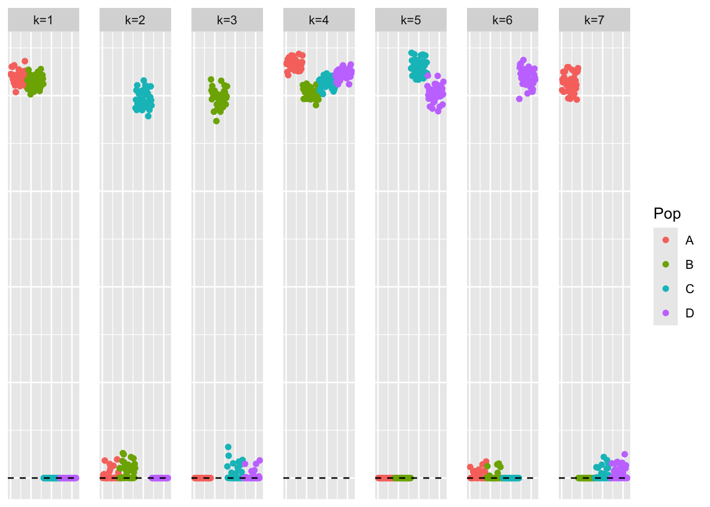
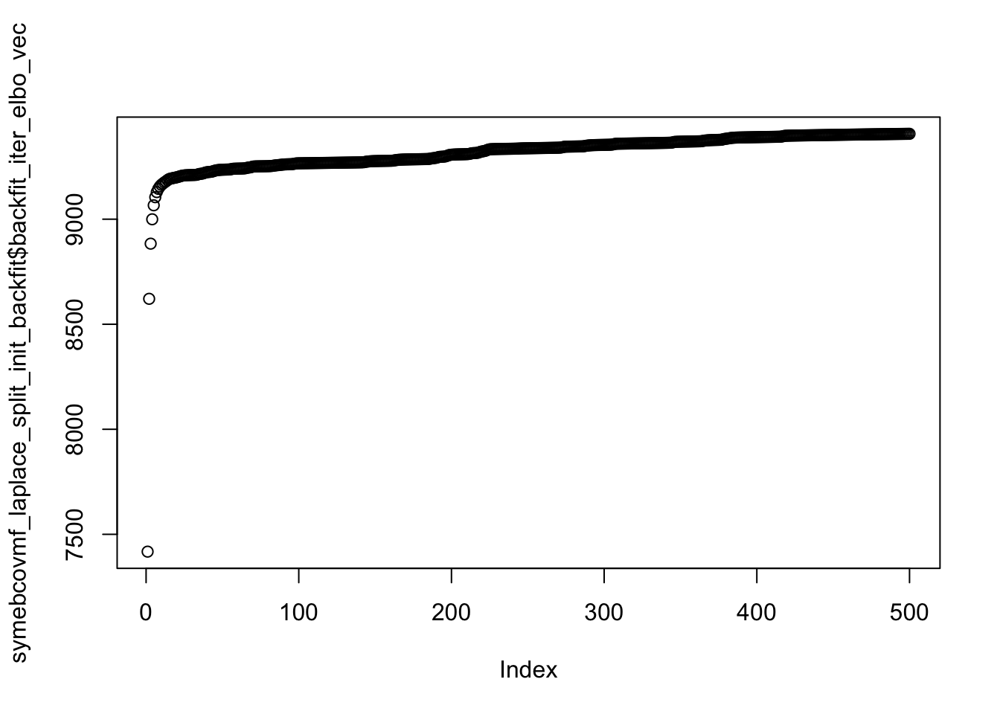

pt_laplace_split_init_symebcovmf_exploration
Annie Xie
2025-11-20
Last updated: 2025-11-20
Checks: 7 0
Knit directory:
symmetric_covariance_decomposition/
This reproducible R Markdown analysis was created with workflowr (version 1.7.2). The Checks tab describes the reproducibility checks that were applied when the results were created. The Past versions tab lists the development history.
Great! Since the R Markdown file has been committed to the Git repository, you know the exact version of the code that produced these results.
Great job! The global environment was empty. Objects defined in the global environment can affect the analysis in your R Markdown file in unknown ways. For reproduciblity it’s best to always run the code in an empty environment.
The command set.seed(20250408) was run prior to running
the code in the R Markdown file. Setting a seed ensures that any results
that rely on randomness, e.g. subsampling or permutations, are
reproducible.
Great job! Recording the operating system, R version, and package versions is critical for reproducibility.
Nice! There were no cached chunks for this analysis, so you can be confident that you successfully produced the results during this run.
Great job! Using relative paths to the files within your workflowr project makes it easier to run your code on other machines.
Great! You are using Git for version control. Tracking code development and connecting the code version to the results is critical for reproducibility.
The results in this page were generated with repository version 941f6eb. See the Past versions tab to see a history of the changes made to the R Markdown and HTML files.
Note that you need to be careful to ensure that all relevant files for
the analysis have been committed to Git prior to generating the results
(you can use wflow_publish or
wflow_git_commit). workflowr only checks the R Markdown
file, but you know if there are other scripts or data files that it
depends on. Below is the status of the Git repository when the results
were generated:
Ignored files:
Ignored: .DS_Store
Ignored: .Rhistory
Note that any generated files, e.g. HTML, png, CSS, etc., are not included in this status report because it is ok for generated content to have uncommitted changes.
These are the previous versions of the repository in which changes were
made to the R Markdown
(analysis/pt_laplace_split_init_symebcovmf_exploration.Rmd)
and HTML
(docs/pt_laplace_split_init_symebcovmf_exploration.html)
files. If you’ve configured a remote Git repository (see
?wflow_git_remote), click on the hyperlinks in the table
below to view the files as they were in that past version.
| File | Version | Author | Date | Message |
|---|---|---|---|---|
| Rmd | 941f6eb | Annie Xie | 2025-11-20 | Add exploration of symebcovmf backfit with flash pt-laplace plus splitting |
Introduction
In this analysis, I explore the performance of symEBcovMF with the point-laplace plus splitting initialization.
Packages and Functions
library(ebnm)
library(pheatmap)
library(ggplot2)
library(symebcovmf)
library(flashier)source('code/visualization_functions.R')
# source('code/symebcovmf_functions.R')Backfit Functions
optimize_factor <- function(R, ebnm_fn, maxiter, tol, v_init, lambda_k, R2k, n, KL){
R2 <- R2k - lambda_k^2
resid_s2 <- estimate_resid_s2(n = n, R2 = R2)
rank_one_KL <- 0
curr_elbo <- -Inf
obj_diff <- Inf
fitted_g_k <- NULL
iter <- 1
vec_elbo_full <- NULL
v <- v_init
while((iter <= maxiter) && (obj_diff > tol)){
# update l; power iteration step
v.old <- v
x <- R %*% v
e <- ebnm_fn(x = x, s = sqrt(resid_s2), g_init = fitted_g_k)
scaling_factor <- sqrt(sum(e$posterior$mean^2) + sum(e$posterior$sd^2))
if (scaling_factor == 0){ # check if scaling factor is zero
scaling_factor <- Inf
v <- e$posterior$mean/scaling_factor
print('Warning: scaling factor is zero')
break
}
v <- e$posterior$mean/scaling_factor
# update lambda and R2
lambda_k.old <- lambda_k
lambda_k <- max(as.numeric(t(v) %*% R %*% v), 0)
R2 <- R2k - lambda_k^2
#store estimate for g
fitted_g_k.old <- fitted_g_k
fitted_g_k <- e$fitted_g
# store KL
rank_one_KL.old <- rank_one_KL
rank_one_KL <- as.numeric(e$log_likelihood) +
- normal_means_loglik(x, sqrt(resid_s2), e$posterior$mean, e$posterior$mean^2 + e$posterior$sd^2)
# update resid_s2
resid_s2.old <- resid_s2
resid_s2 <- estimate_resid_s2(n = n, R2 = R2) # this goes negative?????
# check convergence - maybe change to rank-one obj function
curr_elbo.old <- curr_elbo
curr_elbo <- compute_elbo(resid_s2 = resid_s2,
n = n,
KL = c(KL, rank_one_KL),
R2 = R2)
if (iter > 1){
obj_diff <- curr_elbo - curr_elbo.old
}
if (obj_diff < 0){ # check if convergence_val < 0
v <- v.old
resid_s2 <- resid_s2.old
rank_one_KL <- rank_one_KL.old
lambda_k <- lambda_k.old
curr_elbo <- curr_elbo.old
fitted_g_k <- fitted_g_k.old
print(paste('elbo decreased by', abs(obj_diff)))
break
}
vec_elbo_full <- c(vec_elbo_full, curr_elbo)
iter <- iter + 1
}
return(list(v = v, lambda_k = lambda_k, resid_s2 = resid_s2, curr_elbo = curr_elbo, vec_elbo_full = vec_elbo_full, fitted_g_k = fitted_g_k, rank_one_KL = rank_one_KL))
}#nullcheck function
nullcheck_factors <- function(sym_ebcovmf_obj, L2_tol = 10^(-8)){
null_lambda_idx <- which(sym_ebcovmf_obj$lambda == 0)
factor_L2_norms <- apply(sym_ebcovmf_obj$L_pm, 2, function(v){sqrt(sum(v^2))})
null_factor_idx <- which(factor_L2_norms < L2_tol)
null_idx <- unique(c(null_lambda_idx, null_factor_idx))
keep_idx <- setdiff(c(1:length(sym_ebcovmf_obj$lambda)), null_idx)
if (length(keep_idx) < length(sym_ebcovmf_obj$lambda)){
#remove factors
sym_ebcovmf_obj$L_pm <- sym_ebcovmf_obj$L_pm[,keep_idx]
sym_ebcovmf_obj$lambda <- sym_ebcovmf_obj$lambda[keep_idx]
sym_ebcovmf_obj$KL <- sym_ebcovmf_obj$KL[keep_idx]
sym_ebcovmf_obj$fitted_gs <- sym_ebcovmf_obj$fitted_gs[keep_idx]
}
#shouldn't need to recompute objective function or other things
return(sym_ebcovmf_obj)
}sym_ebcovmf_backfit <- function(S, sym_ebcovmf_obj, ebnm_fn, backfit_maxiter = 100, backfit_tol = 10^(-8), optim_maxiter= 500, optim_tol = 10^(-8)){
K <- length(sym_ebcovmf_obj$lambda)
iter <- 1
obj_diff <- Inf
sym_ebcovmf_obj$backfit_vec_elbo_full <- NULL
sym_ebcovmf_obj$backfit_iter_elbo_vec <- NULL
# refit lambda
sym_ebcovmf_obj <- refit_lambda(S, sym_ebcovmf_obj, maxiter = 25)
while((iter <= backfit_maxiter) && (obj_diff > backfit_tol)){
# print(iter)
obj_old <- sym_ebcovmf_obj$elbo
# loop through each factor
for (k in 1:K){
# print(k)
# compute residual matrix
R <- S - tcrossprod(sym_ebcovmf_obj$L_pm[,-k] %*% diag(sqrt(sym_ebcovmf_obj$lambda[-k]), ncol = (K-1)))
R2k <- compute_R2(S, sym_ebcovmf_obj$L_pm[,-k], sym_ebcovmf_obj$lambda[-k], (K-1)) #this is right but I have one instance where the values don't match what I expect
# optimize factor
factor_proposed <- optimize_factor(R, ebnm_fn, optim_maxiter, optim_tol, sym_ebcovmf_obj$L_pm[,k], sym_ebcovmf_obj$lambda[k], R2k, sym_ebcovmf_obj$n, sym_ebcovmf_obj$KL[-k])
# update object
sym_ebcovmf_obj$L_pm[,k] <- factor_proposed$v
sym_ebcovmf_obj$KL[k] <- factor_proposed$rank_one_KL
sym_ebcovmf_obj$lambda[k] <- factor_proposed$lambda_k
sym_ebcovmf_obj$resid_s2 <- factor_proposed$resid_s2
sym_ebcovmf_obj$fitted_gs[[k]] <- factor_proposed$fitted_g_k
sym_ebcovmf_obj$elbo <- factor_proposed$curr_elbo
sym_ebcovmf_obj$backfit_vec_elbo_full <- c(sym_ebcovmf_obj$backfit_vec_elbo_full, factor_proposed$vec_elbo_full)
#print(sym_ebcovmf_obj$elbo)
sym_ebcovmf_obj <- refit_lambda(S, sym_ebcovmf_obj) # add refitting step?
#print(sym_ebcovmf_obj$elbo)
}
sym_ebcovmf_obj$backfit_iter_elbo_vec <- c(sym_ebcovmf_obj$backfit_iter_elbo_vec, sym_ebcovmf_obj$elbo)
iter <- iter + 1
obj_diff <- abs(sym_ebcovmf_obj$elbo - obj_old)
# need to add check if it is negative?
}
# nullcheck
sym_ebcovmf_obj <- nullcheck_factors(sym_ebcovmf_obj)
return(sym_ebcovmf_obj)
}Data Generation
sim_4pops <- function(args) {
set.seed(args$seed)
n <- sum(args$pop_sizes)
p <- args$n_genes
FF <- matrix(rnorm(7 * p, sd = rep(args$branch_sds, each = p)), ncol = 7)
# if (args$constrain_F) {
# FF_svd <- svd(FF)
# FF <- FF_svd$u
# FF <- t(t(FF) * branch_sds * sqrt(p))
# }
LL <- matrix(0, nrow = n, ncol = 7)
LL[, 1] <- 1
LL[, 2] <- rep(c(1, 1, 0, 0), times = args$pop_sizes)
LL[, 3] <- rep(c(0, 0, 1, 1), times = args$pop_sizes)
LL[, 4] <- rep(c(1, 0, 0, 0), times = args$pop_sizes)
LL[, 5] <- rep(c(0, 1, 0, 0), times = args$pop_sizes)
LL[, 6] <- rep(c(0, 0, 1, 0), times = args$pop_sizes)
LL[, 7] <- rep(c(0, 0, 0, 1), times = args$pop_sizes)
E <- matrix(rnorm(n * p, sd = args$indiv_sd), nrow = n)
Y <- LL %*% t(FF) + E
YYt <- (1/p)*tcrossprod(Y)
return(list(Y = Y, YYt = YYt, LL = LL, FF = FF, K = ncol(LL)))
}sim_args = list(pop_sizes = rep(40, 4), n_genes = 1000, branch_sds = rep(2,7), indiv_sd = 1, seed = 1)
sim_data <- sim_4pops(sim_args)This is a heatmap of the scaled Gram matrix:
plot_heatmap(sim_data$YYt, colors_range = c('blue','gray96','red'), brks = seq(-max(abs(sim_data$YYt)), max(abs(sim_data$YYt)), length.out = 50))
This is a scatter plot of the true loadings matrix:
pop_vec <- c(rep('A', 40), rep('B', 40), rep('C', 40), rep('D', 40))
plot_loadings(sim_data$LL, pop_vec)
Initialization
laplace_split_initialization <- function(S, Kmax, verbose = 2, backfit_maxiter = 500, backfit_tol = NULL){
# backfitting is important in the tree setting
# fit point-laplace fit with flash
flash_laplace_fit <- flash_init(data = S, var_type = 0) |>
flash_set_verbose(verbose = verbose) |>
flash_greedy(Kmax = Kmax, ebnm_fn = ebnm::ebnm_point_laplace) |>
flash_backfit(maxiter = backfit_maxiter, tol = backfit_tol) |>
flash_nullcheck()
# rescale fit so that L and F are of the same scale
flash_laplace_fit_scaled <- ldf(flash_laplace_fit, 'i')
LL <- flash_laplace_fit_scaled$L
##FF <- flash_laplace_fit_scaled$F
# split into positive and negative components
LL <- cbind(pmax(LL, 0), pmax(-LL, 0))
##FF <- cbind(pmax(FF, 0), pmax(-FF, 0))
# remove columns of zeros
idx.nonzero <- apply(LL, 2, function(x){return(sum(x^2))}) > 10^(-10)
LL <- LL[, idx.nonzero]
# refit weights by least squares
n <- nrow(S)
llt_vec <- matrix(rep(0, ncol(LL)*n*n), ncol = ncol(LL))
for (i in 1:ncol(LL)){
llt_vec[,i] <- c(LL[,i]%*%t(LL[,i]))
}
nnlm_fit <- NNLM::nnlm(llt_vec, as.matrix(c(S), ncol = 1), alpha = c(0,0,0))
indices_keep <- (nnlm_fit$coefficients > 0)
LL_scaled <- LL[,indices_keep] %*% diag(sqrt(nnlm_fit$coefficients[indices_keep]))
return(LL_scaled)
}LL_split_init <- laplace_split_initialization(sim_data$YYt, Kmax = 7)Adding factor 1 to flash object...
Optimizing factor...
Factor successfully added. Objective: -69721.325
Adding factor 2 to flash object...
Optimizing factor...
Factor successfully added. Objective: -49567.346
Adding factor 3 to flash object...
Optimizing factor...
Factor successfully added. Objective: -42038.012
Adding factor 4 to flash object...
Optimizing factor...
Factor successfully added. Objective: -20668.510
Adding factor 5 to flash object...
Optimizing factor...
Factor doesn't significantly increase objective and won't be added.
Wrapping up...
Done.
Backfitting 4 factors (tolerance: 3.81e-04)...
Difference between iterations is within 1.0e+04...
Difference between iterations is within 1.0e+03...
Difference between iterations is within 1.0e+02...
Difference between iterations is within 1.0e+01...
Difference between iterations is within 1.0e+00...
Difference between iterations is within 1.0e-01...
Difference between iterations is within 1.0e-02...
Difference between iterations is within 1.0e-03...
Backfit complete. Objective: 18961.444
Wrapping up...
Done.
Nullchecking 4 factors...
No factor can be removed without significantly decreasing the objective.
Done.This is a plot of the initialization:
plot_loadings(LL_split_init, rep(c('A','B','C','D'), each = 40))
We can see that the initialization contains the components of a tree – there is an intercept components, two branch components, and four population components.
symEBcovMF backfit with point-exponential prior
Now, we backfit with symEBcovMF, initialized with the point-Laplace plus splitting estimate.
First, we initialize a symEBcovMF object using \(\hat{L}_{split}\).
symebcovmf_laplace_split_init_obj <- sym_ebcovmf_init(sim_data$YYt)
split_L_norms <- apply(LL_split_init, 2, function(x){sqrt(sum(x^2))})
idx.keep <- which(split_L_norms > 0)
split_L_normalized <- apply(LL_split_init[,idx.keep], 2, function(x){x/sqrt(sum(x^2))})
symebcovmf_laplace_split_init_obj$L_pm <- split_L_normalized
symebcovmf_laplace_split_init_obj$lambda <- rep(split_L_norms, times = 2)[idx.keep]
symebcovmf_laplace_split_init_obj$resid_s2 <- estimate_resid_s2(S = sim_data$YYt,
L = symebcovmf_laplace_split_init_obj$L_pm,
lambda = symebcovmf_laplace_split_init_obj$lambda,
n = nrow(sim_data$Y),
K = length(symebcovmf_laplace_split_init_obj$lambda))
symebcovmf_laplace_split_init_obj$elbo <- compute_elbo(S = sim_data$YYt,
L = symebcovmf_laplace_split_init_obj$L_pm,
lambda = symebcovmf_laplace_split_init_obj$lambda,
resid_s2 = symebcovmf_laplace_split_init_obj$resid_s2,
n = nrow(sim_data$Y),
K = length(symebcovmf_laplace_split_init_obj$lambda),
KL = rep(0, length(symebcovmf_laplace_split_init_obj$lambda)))I refit the lambda values keeping the factors fixed.
# need to check this
symebcovmf_laplace_split_obj <- refit_lambda(S = sim_data$YYt, symebcovmf_laplace_split_init_obj, maxiter = 500)Now, we run the backfit with point-exponential prior.
symebcovmf_laplace_split_init_backfit <- sym_ebcovmf_backfit(sim_data$YYt, symebcovmf_laplace_split_init_obj, ebnm_fn = ebnm::ebnm_point_exponential, backfit_maxiter = 500)[1] "elbo decreased by 3.05863068206236e-09"
[1] "elbo decreased by 9.82254277914762e-11"
[1] "elbo decreased by 2.62843968812376e-10"
[1] "elbo decreased by 1.77533365786076e-09"
[1] "elbo decreased by 1.35514710564166e-10"
[1] "elbo decreased by 1.98560883291066e-08"
[1] "elbo decreased by 2.36650521401316e-09"
[1] "elbo decreased by 1.51339918375015e-09"
[1] "elbo decreased by 7.25776772014797e-10"
[1] "elbo decreased by 2.91274773189798e-08"
[1] "elbo decreased by 7.19228410162032e-09"
[1] "elbo decreased by 5.0931703299284e-11"
[1] "elbo decreased by 3.3360265661031e-09"
[1] "elbo decreased by 9.90985427051783e-09"
[1] "elbo decreased by 9.33141564019024e-10"
[1] "elbo decreased by 5.79893821850419e-09"
[1] "elbo decreased by 2.47382558882236e-10"
[1] "elbo decreased by 1.05537765193731e-08"
[1] "elbo decreased by 9.64064383879304e-11"
[1] "elbo decreased by 1.76441972143948e-10"
[1] "elbo decreased by 1.13141140900552e-09"
[1] "elbo decreased by 2.25554686039686e-10"
[1] "elbo decreased by 3.64907464245334e-08"
[1] "elbo decreased by 8.11451172921807e-09"
[1] "elbo decreased by 6.23913365416229e-10"
[1] "elbo decreased by 5.34782884642482e-10"
[1] "elbo decreased by 2.20461515709758e-09"
[1] "elbo decreased by 5.03860064782202e-10"
[1] "elbo decreased by 1.80534698301926e-08"
[1] "elbo decreased by 9.86437953542918e-09"
[1] "elbo decreased by 6.22276274953038e-09"
[1] "elbo decreased by 9.44237399380654e-09"
[1] "elbo decreased by 2.05363903660327e-09"
[1] "elbo decreased by 2.89328454528004e-08"
[1] "elbo decreased by 8.85847839526832e-09"
[1] "elbo decreased by 1.18234311230481e-10"
[1] "elbo decreased by 2.49019649345428e-09"
[1] "elbo decreased by 1.68256519827992e-09"
[1] "elbo decreased by 3.94065864384174e-08"
[1] "elbo decreased by 3.24434950016439e-08"
[1] "elbo decreased by 2.53203324973583e-09"
[1] "elbo decreased by 4.92946128360927e-10"
[1] "elbo decreased by 1.88447302207351e-09"
[1] "elbo decreased by 4.05634636990726e-10"
[1] "elbo decreased by 1.32367858896032e-08"
[1] "elbo decreased by 4.92946128360927e-10"
[1] "elbo decreased by 1.0550138540566e-10"
[1] "elbo decreased by 7.60337570682168e-09"
[1] "elbo decreased by 1.06047082226723e-09"
[1] "elbo decreased by 1.81898940354586e-10"
[1] "elbo decreased by 1.0113581083715e-09"
[1] "elbo decreased by 5.23868948221207e-10"
[1] "elbo decreased by 2.41379893850535e-09"
[1] "elbo decreased by 3.34694050252438e-10"
[1] "elbo decreased by 2.12821760214865e-10"
[1] "elbo decreased by 5.78438630327582e-09"
[1] "elbo decreased by 2.26464180741459e-09"
[1] "elbo decreased by 2.58296495303512e-10"
[1] "elbo decreased by 2.43744580075145e-09"
[1] "elbo decreased by 2.68846633844078e-09"
[1] "elbo decreased by 1.29148247651756e-10"
[1] "elbo decreased by 1.86519173439592e-08"
[1] "elbo decreased by 2.38287611864507e-10"
[1] "elbo decreased by 1.32513378048316e-08"
[1] "elbo decreased by 9.80435288511217e-10"
[1] "elbo decreased by 1.67347025126219e-08"
[1] "elbo decreased by 1.90084392670542e-09"
[1] "elbo decreased by 1.21144694276154e-09"
[1] "elbo decreased by 3.87444742955267e-10"
[1] "elbo decreased by 2.29920260608196e-09"
[1] "elbo decreased by 2.18387867789716e-08"
[1] "elbo decreased by 1.81717041414231e-09"
[1] "elbo decreased by 6.73026079311967e-10"
[1] "elbo decreased by 1.88447302207351e-08"
[1] "elbo decreased by 2.09365680348128e-09"
[1] "elbo decreased by 7.6397554948926e-10"
[1] "elbo decreased by 4.76575223729014e-10"
[1] "elbo decreased by 2.10020516533405e-08"
[1] "elbo decreased by 2.88855517283082e-09"
[1] "elbo decreased by 3.16504156216979e-10"
[1] "elbo decreased by 3.56885720975697e-09"
[1] "elbo decreased by 4.54747350886464e-10"
[1] "elbo decreased by 9.30231180973351e-09"
[1] "elbo decreased by 5.12955011799932e-10"
[1] "elbo decreased by 1.16324372356758e-08"
[1] "elbo decreased by 5.45696821063757e-11"
[1] "elbo decreased by 1.39334588311613e-09"
[1] "elbo decreased by 2.64117261394858e-09"
[1] "elbo decreased by 1.76678440766409e-08"
[1] "elbo decreased by 2.14640749618411e-10"
[1] "elbo decreased by 5.89352566748857e-10"
[1] "elbo decreased by 1.93904270417988e-09"
[1] "elbo decreased by 2.52584868576378e-08"
[1] "elbo decreased by 1.06592779047787e-09"
[1] "elbo decreased by 6.23676896793768e-08"
[1] "elbo decreased by 2.13367457035929e-09"
[1] "elbo decreased by 1.17724994197488e-08"
[1] "elbo decreased by 9.38598532229662e-10"
[1] "elbo decreased by 2.550586941652e-08"
[1] "elbo decreased by 4.5656634029001e-10"
[1] "elbo decreased by 6.85759005136788e-10"
[1] "elbo decreased by 4.91127138957381e-11"
[1] "elbo decreased by 6.23913365416229e-10"
[1] "elbo decreased by 9.82254277914762e-11"
[1] "elbo decreased by 7.6397554948926e-10"
[1] "elbo decreased by 8.78571881912649e-10"
[1] "elbo decreased by 9.41508915275335e-09"
[1] "elbo decreased by 1.10776454675943e-09"
[1] "elbo decreased by 2.59933585766703e-09"
[1] "elbo decreased by 7.43784767109901e-09"
[1] "elbo decreased by 3.74384399037808e-08"
[1] "elbo decreased by 1.70257408171892e-09"
[1] "elbo decreased by 3.31419869326055e-09"
[1] "elbo decreased by 8.48922354634851e-09"
[1] "elbo decreased by 3.63797880709171e-10"
[1] "elbo decreased by 5.02041075378656e-10"
[1] "elbo decreased by 7.58700480218977e-09"
[1] "elbo decreased by 5.74800651520491e-10"
[1] "elbo decreased by 1.20962795335799e-09"
[1] "elbo decreased by 2.77032086160034e-09"
[1] "elbo decreased by 5.3114490583539e-10"
[1] "elbo decreased by 8.67657945491374e-10"
[1] "elbo decreased by 2.4492692318745e-08"
[1] "elbo decreased by 3.39605321642011e-09"
[1] "elbo decreased by 1.58979673869908e-09"
[1] "elbo decreased by 7.60337570682168e-10"
[1] "elbo decreased by 4.41650627180934e-09"
[1] "elbo decreased by 9.14951669983566e-10"
[1] "elbo decreased by 6.37919583823532e-09"
[1] "elbo decreased by 1.14596332423389e-10"
[1] "elbo decreased by 1.666194293648e-09"
[1] "elbo decreased by 1.27147359307855e-09"
[1] "elbo decreased by 4.42014425061643e-10"
[1] "elbo decreased by 1.59961928147823e-08"
[1] "elbo decreased by 1.29875843413174e-09"
[1] "elbo decreased by 1.66073732543737e-09"
[1] "elbo decreased by 2.49801814788952e-08"
[1] "elbo decreased by 4.20186552219093e-10"
[1] "elbo decreased by 1.11140252556652e-09"
[1] "elbo decreased by 8.73114913702011e-10"
[1] "elbo decreased by 6.4737832872197e-09"
[1] "elbo decreased by 1.08120730146766e-08"
[1] "elbo decreased by 3.36513039655983e-10"
[1] "elbo decreased by 1.55341695062816e-09"
[1] "elbo decreased by 2.8261638362892e-08"
[1] "elbo decreased by 1.45519152283669e-10"
[1] "elbo decreased by 6.48833520244807e-09"
[1] "elbo decreased by 4.16257535107434e-08"
[1] "elbo decreased by 2.97768565360457e-09"
[1] "elbo decreased by 6.77391653880477e-09"
[1] "elbo decreased by 1.18234311230481e-09"
[1] "elbo decreased by 3.09773895423859e-09"
[1] "elbo decreased by 5.34964783582836e-09"
[1] "elbo decreased by 2.81943357549608e-10"
[1] "elbo decreased by 6.00266503170133e-10"
[1] "elbo decreased by 4.22005541622639e-10"
[1] "elbo decreased by 2.62371031567454e-08"
[1] "elbo decreased by 3.99268174078315e-09"
[1] "elbo decreased by 2.3246684577316e-09"
[1] "elbo decreased by 1.74986780621111e-09"
[1] "elbo decreased by 5.30053512193263e-09"
[1] "elbo decreased by 4.40741132479161e-09"
[1] "elbo decreased by 2.37560016103089e-09"
[1] "elbo decreased by 4.54747350886464e-11"
[1] "elbo decreased by 1.48975232150406e-09"
[1] "elbo decreased by 2.59751686826348e-08"
[1] "elbo decreased by 7.15954229235649e-09"
[1] "elbo decreased by 3.44334694091231e-09"
[1] "elbo decreased by 5.20230969414115e-10"
[1] "elbo decreased by 5.14373823534697e-08"
[1] "elbo decreased by 4.18731360696256e-09"
[1] "elbo decreased by 4.43833414465189e-10"
[1] "elbo decreased by 3.94356902688742e-09"
[1] "elbo decreased by 5.11136022396386e-10"
[1] "elbo decreased by 3.43370629707351e-08"
[1] "elbo decreased by 9.09494701772928e-10"
[1] "elbo decreased by 5.89352566748857e-10"
[1] "elbo decreased by 4.63351170765236e-08"
[1] "elbo decreased by 1.11685949377716e-09"
[1] "elbo decreased by 6.07542460784316e-10"
[1] "elbo decreased by 2.31011654250324e-10"
[1] "elbo decreased by 7.1795511757955e-09"
[1] "elbo decreased by 1.27511157188565e-09"
[1] "elbo decreased by 1.35150912683457e-09"
[1] "elbo decreased by 1.38970790430903e-09"
[1] "elbo decreased by 2.21043592318892e-08"
[1] "elbo decreased by 4.86943463329226e-09"
[1] "elbo decreased by 1.56614987645298e-09"
[1] "elbo decreased by 6.12999428994954e-10"
[1] "elbo decreased by 5.30890247318894e-08"
[1] "elbo decreased by 4.16548573412001e-09"
[1] "elbo decreased by 6.65750121697783e-10"
[1] "elbo decreased by 4.46889316663146e-08"
[1] "elbo decreased by 1.36424205265939e-10"
[1] "elbo decreased by 4.0381564758718e-09"
[1] "elbo decreased by 1.28238752949983e-09"
[1] "elbo decreased by 1.63709046319127e-10"
[1] "elbo decreased by 3.15430952468887e-08"
[1] "elbo decreased by 3.56885720975697e-09"
[1] "elbo decreased by 6.12999428994954e-10"
[1] "elbo decreased by 6.11180439591408e-10"
[1] "elbo decreased by 7.6397554948926e-11"
[1] "elbo decreased by 4.09127096645534e-08"
[1] "elbo decreased by 7.44876160752028e-09"
[1] "elbo decreased by 4.92946128360927e-10"
[1] "elbo decreased by 1.19325704872608e-09"
[1] "elbo decreased by 6.18638296145946e-09"
[1] "elbo decreased by 6.43558450974524e-09"
[1] "elbo decreased by 1.04046193882823e-09"
[1] "elbo decreased by 1.34605215862393e-10"
[1] "elbo decreased by 3.27418092638254e-09"
[1] "elbo decreased by 8.01082933321595e-09"
[1] "elbo decreased by 2.52839527092874e-10"
[1] "elbo decreased by 5.95900928601623e-09"
[1] "elbo decreased by 5.07498043589294e-10"
[1] "elbo decreased by 3.01915861200541e-08"
[1] "elbo decreased by 5.74982550460845e-09"
[1] "elbo decreased by 7.1122485678643e-10"
[1] "elbo decreased by 3.72892827726901e-10"
[1] "elbo decreased by 2.15677573578432e-08"
[1] "elbo decreased by 3.27418092638254e-10"
[1] "elbo decreased by 1.47701939567924e-09"
[1] "elbo decreased by 4.52928361482918e-10"
[1] "elbo decreased by 1.06956576928496e-08"
[1] "elbo decreased by 1.64436642080545e-09"
[1] "elbo decreased by 2.25554686039686e-10"
[1] "elbo decreased by 1.00953911896795e-09"
[1] "elbo decreased by 2.91038304567337e-10"
[1] "elbo decreased by 9.56788426265121e-10"
[1] "elbo decreased by 3.45207809004933e-08"
[1] "elbo decreased by 3.40151018463075e-09"
[1] "elbo decreased by 1.02772901300341e-09"
[1] "elbo decreased by 1.15687726065516e-09"
[1] "elbo decreased by 1.38061295729131e-09"
[1] "elbo decreased by 1.74622982740402e-10"
[1] "elbo decreased by 7.9689925769344e-09"
[1] "elbo decreased by 1.03500497061759e-09"
[1] "elbo decreased by 6.8939698394388e-10"
[1] "elbo decreased by 1.53340806718916e-09"
[1] "elbo decreased by 1.2732925824821e-09"
[1] "elbo decreased by 9.84073267318308e-10"
[1] "elbo decreased by 9.3968992587179e-09"
[1] "elbo decreased by 2.855813363567e-10"
[1] "elbo decreased by 1.52249413076788e-09"
[1] "elbo decreased by 3.12684278469533e-09"
[1] "elbo decreased by 6.73026079311967e-10"
[1] "elbo decreased by 6.49379217065871e-09"
[1] "elbo decreased by 5.54064172320068e-09"
[1] "elbo decreased by 1.94813765119761e-09"
[1] "elbo decreased by 2.56477505899966e-10"
[1] "elbo decreased by 8.11269273981452e-10"
[1] "elbo decreased by 2.46582203544676e-08"
[1] "elbo decreased by 6.89215085003525e-09"
[1] "elbo decreased by 1.52795109897852e-10"
[1] "elbo decreased by 2.05545802600682e-10"
[1] "elbo decreased by 4.14729584008455e-10"
[1] "elbo decreased by 2.91674950858578e-08"
[1] "elbo decreased by 2.16823536902666e-09"
[1] "elbo decreased by 3.27418092638254e-11"
[1] "elbo decreased by 1.60071067512035e-10"
[1] "elbo decreased by 6.38465280644596e-10"
[1] "elbo decreased by 2.02453520614654e-08"
[1] "elbo decreased by 1.50976120494306e-10"
[1] "elbo decreased by 2.29192664846778e-10"
[1] "elbo decreased by 1.57506292453036e-08"
[1] "elbo decreased by 8.45830072648823e-10"
[1] "elbo decreased by 1.79716153070331e-09"
[1] "elbo decreased by 1.36533344630152e-08"
[1] "elbo decreased by 2.67573341261595e-09"
[1] "elbo decreased by 1.14596332423389e-10"
[1] "elbo decreased by 1.78988557308912e-09"
[1] "elbo decreased by 9.89166437648237e-09"
[1] "elbo decreased by 5.82076609134674e-11"
[1] "elbo decreased by 1.45519152283669e-10"
[1] "elbo decreased by 8.56744009070098e-10"
[1] "elbo decreased by 1.37952156364918e-08"
[1] "elbo decreased by 1.01863406598568e-10"
[1] "elbo decreased by 7.23957782611251e-10"
[1] "elbo decreased by 2.08274286706001e-09"
[1] "elbo decreased by 1.30967237055302e-09"
[1] "elbo decreased by 1.52867869473994e-08"
[1] "elbo decreased by 7.98536348156631e-10"
[1] "elbo decreased by 4.32919478043914e-09"
[1] "elbo decreased by 8.89485818333924e-10"
[1] "elbo decreased by 6.41739461570978e-09"
[1] "elbo decreased by 2.91402102448046e-09"
[1] "elbo decreased by 7.49605533201247e-09"
[1] "elbo decreased by 4.66025085188448e-09"
[1] "elbo decreased by 2.80124368146062e-10"
[1] "elbo decreased by 4.69117367174476e-09"
[1] "elbo decreased by 9.09494701772928e-11"
[1] "elbo decreased by 1.11685949377716e-09"
[1] "elbo decreased by 1.85755197890103e-08"
[1] "elbo decreased by 2.21916707232594e-09"
[1] "elbo decreased by 2.26827978622168e-09"
[1] "elbo decreased by 1.31676642922685e-08"
[1] "elbo decreased by 2.85399437416345e-09"
[1] "elbo decreased by 1.12777343019843e-09"
[1] "elbo decreased by 1.99652276933193e-08"
[1] "elbo decreased by 1.8007995095104e-10"
[1] "elbo decreased by 3.61615093424916e-09"
[1] "elbo decreased by 9.05129127204418e-09"
[1] "elbo decreased by 1.39007170218974e-08"
[1] "elbo decreased by 1.18052412290126e-09"
[1] "elbo decreased by 3.12047632178292e-08"
[1] "elbo decreased by 3.77985998056829e-09"
[1] "elbo decreased by 9.45874489843845e-11"
[1] "elbo decreased by 6.20457285549492e-09"
[1] "elbo decreased by 6.73026079311967e-10"
[1] "elbo decreased by 6.67569111101329e-10"
[1] "elbo decreased by 1.70330167748034e-08"
[1] "elbo decreased by 1.69529812410474e-09"
[1] "elbo decreased by 2.45745468419045e-09"
[1] "elbo decreased by 7.62156560085714e-10"
[1] "elbo decreased by 1.52431312017143e-09"
[1] "elbo decreased by 2.07110133487731e-08"
[1] "elbo decreased by 4.4547050492838e-09"
[1] "elbo decreased by 8.0763129517436e-10"
[1] "elbo decreased by 1.10776454675943e-09"
[1] "elbo decreased by 6.3664629124105e-10"
[1] "elbo decreased by 3.16449586534873e-08"
[1] "elbo decreased by 8.56744009070098e-09"
[1] "elbo decreased by 7.1122485678643e-10"
[1] "elbo decreased by 1.68438418768346e-09"
[1] "elbo decreased by 9.83891368377954e-09"
[1] "elbo decreased by 1.80261849891394e-09"
[1] "elbo decreased by 4.64387994725257e-09"
[1] "elbo decreased by 7.09405867382884e-10"
[1] "elbo decreased by 2.29556462727487e-09"
[1] "elbo decreased by 1.40680640470237e-08"
[1] "elbo decreased by 5.78438630327582e-10"
[1] "elbo decreased by 3.4233380574733e-09"
[1] "elbo decreased by 1.68802216649055e-09"
[1] "elbo decreased by 1.84809323400259e-09"
[1] "elbo decreased by 1.42608769237995e-09"
[1] "elbo decreased by 4.19458956457675e-09"
[1] "elbo decreased by 4.60204319097102e-10"
[1] "elbo decreased by 6.34827301837504e-10"
[1] "elbo decreased by 3.94902599509805e-09"
[1] "elbo decreased by 2.29192664846778e-10"
[1] "elbo decreased by 1.80643837666139e-08"
[1] "elbo decreased by 3.49245965480804e-10"
[1] "elbo decreased by 1.26237864606082e-09"
[1] "elbo decreased by 1.03027559816837e-08"
[1] "elbo decreased by 6.08997652307153e-09"
[1] "elbo decreased by 6.69388100504875e-10"
[1] "elbo decreased by 1.07320374809206e-09"
[1] "elbo decreased by 2.35559127759188e-09"
[1] "elbo decreased by 1.69602571986616e-08"
[1] "elbo decreased by 7.07768776919693e-09"
[1] "elbo decreased by 8.42192093841732e-10"
[1] "elbo decreased by 4.23460733145475e-09"
[1] "elbo decreased by 2.34649633057415e-10"
[1] "elbo decreased by 5.05860953126103e-09"
[1] "elbo decreased by 1.30967237055302e-09"
[1] "elbo decreased by 4.40923031419516e-09"
[1] "elbo decreased by 1.58470356836915e-08"
[1] "elbo decreased by 1.97724148165435e-09"
[1] "elbo decreased by 9.78616299107671e-10"
[1] "elbo decreased by 4.40559233538806e-09"
[1] "elbo decreased by 4.71118255518377e-10"
[1] "elbo decreased by 5.98629412706941e-09"
[1] "elbo decreased by 6.91215973347425e-10"
[1] "elbo decreased by 1.11976987682283e-08"
[1] "elbo decreased by 1.06410880107433e-09"
[1] "elbo decreased by 1.48611434269696e-09"
[1] "elbo decreased by 1.41699274536222e-09"
[1] "elbo decreased by 3.56267264578491e-08"
[1] "elbo decreased by 5.45696821063757e-10"
[1] "elbo decreased by 3.23780113831162e-10"
[1] "elbo decreased by 2.25918483920395e-09"
[1] "elbo decreased by 7.58518581278622e-10"
[1] "elbo decreased by 1.45628291647881e-08"
[1] "elbo decreased by 3.30219336319715e-08"
[1] "elbo decreased by 4.36557456851006e-10"
[1] "elbo decreased by 3.09719325741753e-08"
[1] "elbo decreased by 1.56433088704944e-10"
[1] "elbo decreased by 5.6206772569567e-10"
[1] "elbo decreased by 3.27418092638254e-10"
[1] "elbo decreased by 1.16124283522367e-08"
[1] "elbo decreased by 4.18003764934838e-09"
[1] "elbo decreased by 6.24095264356583e-09"
[1] "elbo decreased by 1.38479663291946e-08"
[1] "elbo decreased by 3.08682501781732e-09"
[1] "elbo decreased by 1.48975232150406e-09"
[1] "elbo decreased by 4.0321538108401e-08"
[1] "elbo decreased by 4.52564563602209e-09"
[1] "elbo decreased by 7.3741830419749e-09"
[1] "elbo decreased by 1.4715624274686e-09"
[1] "elbo decreased by 1.0986695997417e-09"
[1] "elbo decreased by 1.48611434269696e-09"
[1] "elbo decreased by 4.7542926040478e-08"
[1] "elbo decreased by 6.22094376012683e-10"
[1] "elbo decreased by 3.67435859516263e-10"
[1] "elbo decreased by 3.61978891305625e-09"
[1] "elbo decreased by 2.55749910138547e-09"
[1] "elbo decreased by 1.87574187293649e-08"
[1] "elbo decreased by 1.45155354402959e-09"
[1] "elbo decreased by 3.292370820418e-10"
[1] "elbo decreased by 6.18456397205591e-11"
[1] "elbo decreased by 5.36238076165318e-09"
[1] "elbo decreased by 2.89219315163791e-10"
[1] "elbo decreased by 3.33056959789246e-09"
[1] "elbo decreased by 5.56610757485032e-10"
[1] "elbo decreased by 6.89215085003525e-09"
[1] "elbo decreased by 6.8030203692615e-10"
[1] "elbo decreased by 1.26874510897323e-08"
[1] "elbo decreased by 7.3305272962898e-10"
[1] "elbo decreased by 5.73709257878363e-09"
[1] "elbo decreased by 3.47790773957968e-09"
[1] "elbo decreased by 1.8208083929494e-09"
[1] "elbo decreased by 5.60266926186159e-08"
[1] "elbo decreased by 1.2732925824821e-11"
[1] "elbo decreased by 6.53017195872962e-10"
[1] "elbo decreased by 1.34241417981684e-09"
[1] "elbo decreased by 5.3114490583539e-10"
[1] "elbo decreased by 1.21872290037572e-09"
[1] "elbo decreased by 8.00355337560177e-11"
[1] "elbo decreased by 1.96814653463662e-09"
[1] "elbo decreased by 6.8959707277827e-08"
[1] "elbo decreased by 2.2433596313931e-08"
[1] "elbo decreased by 7.36690708436072e-09"
[1] "elbo decreased by 1.83717929758132e-10"
[1] "elbo decreased by 3.80441633751616e-08"
[1] "elbo decreased by 4.98403096571565e-09"
[1] "elbo decreased by 8.58562998473644e-10"
[1] "elbo decreased by 1.28165993373841e-08"
[1] "elbo decreased by 2.00816430151463e-09"
[1] "elbo decreased by 7.22502591088414e-09"
[1] "elbo decreased by 3.27418092638254e-11"
[1] "elbo decreased by 2.51948222285137e-08"
[1] "elbo decreased by 1.10594555735588e-09"
[1] "elbo decreased by 5.05315256305039e-09"
[1] "elbo decreased by 5.87533577345312e-10"
[1] "elbo decreased by 6.88305590301752e-09"
[1] "elbo decreased by 6.91215973347425e-11"
[1] "elbo decreased by 2.11002770811319e-10"
[1] "elbo decreased by 5.27870724909008e-09"
[1] "elbo decreased by 6.11180439591408e-10"
[1] "elbo decreased by 5.92990545555949e-10"
[1] "elbo decreased by 9.51695255935192e-09"
[1] "elbo decreased by 9.04037733562291e-09"
[1] "elbo decreased by 1.4915713109076e-09"
[1] "elbo decreased by 1.61780917551368e-08"
[1] "elbo decreased by 2.24281393457204e-09"
[1] "elbo decreased by 1.77442416315898e-08"
[1] "elbo decreased by 3.64707375410944e-09"
[1] "elbo decreased by 3.1614035833627e-09"
[1] "elbo decreased by 7.62156560085714e-10"
[1] "elbo decreased by 1.81244104169309e-08"
[1] "elbo decreased by 5.47515810467303e-10"
[1] "elbo decreased by 2.51020537689328e-10"
[1] "elbo decreased by 1.41517375595868e-09"
[1] "elbo decreased by 1.2732925824821e-09"
[1] "elbo decreased by 8.46739567350596e-09"
[1] "elbo decreased by 1.30967237055302e-10"
[1] "elbo decreased by 8.59836291056126e-09"
[1] "elbo decreased by 1.59707269631326e-09"
[1] "elbo decreased by 5.43877831660211e-10"
[1] "elbo decreased by 1.46646925713867e-08"
[1] "elbo decreased by 4.36557456851006e-10"
[1] "elbo decreased by 9.22227627597749e-10"
[1] "elbo decreased by 4.09272615797818e-10"
[1] "elbo decreased by 1.82371877599508e-08"
[1] "elbo decreased by 3.91082721762359e-10"
[1] "elbo decreased by 3.38332029059529e-10"
[1] "elbo decreased by 9.09130903892219e-09"
[1] "elbo decreased by 1.67165126185864e-09"
[1] "elbo decreased by 1.59161572810262e-09"
[1] "elbo decreased by 6.29370333626866e-10"
[1] "elbo decreased by 3.65907908417284e-08"
[1] "elbo decreased by 1.32968125399202e-09"
[1] "elbo decreased by 1.28438841784373e-08"
[1] "elbo decreased by 3.44334694091231e-09"
[1] "elbo decreased by 9.07675712369382e-10"
[1] "elbo decreased by 2.10820871870965e-09"
[1] "elbo decreased by 2.32776073971763e-08"
[1] "elbo decreased by 6.00266503170133e-10"
[1] "elbo decreased by 1.61526259034872e-09"
[1] "elbo decreased by 2.88055161945522e-08"
[1] "elbo decreased by 1.72076397575438e-09"
[1] "elbo decreased by 1.05064827948809e-08"
[1] "elbo decreased by 5.34782884642482e-10"
[1] "elbo decreased by 3.92992660636082e-08"
[1] "elbo decreased by 6.79574441164732e-09"
[1] "elbo decreased by 9.09494701772928e-12"
[1] "elbo decreased by 1.03682396002114e-10"
[1] "elbo decreased by 1.70493876794353e-08"
[1] "elbo decreased by 1.15687726065516e-09"
[1] "elbo decreased by 1.3606040738523e-09"
[1] "elbo decreased by 1.85282260645181e-08"
[1] "elbo decreased by 5.43514033779502e-09"
[1] "elbo decreased by 1.7134880181402e-09"
[1] "elbo decreased by 4.55838744528592e-09"
[1] "elbo decreased by 1.30603439174592e-09"
[1] "elbo decreased by 6.73026079311967e-11"
[1] "elbo decreased by 2.11002770811319e-09"
[1] "elbo decreased by 3.24489519698545e-08"
[1] "elbo decreased by 5.33691491000354e-09"
[1] "elbo decreased by 8.64019966684282e-10"
[1] "elbo decreased by 8.18545231595635e-10"
[1] "elbo decreased by 2.44108377955854e-09"
[1] "elbo decreased by 9.89530235528946e-10"
[1] "elbo decreased by 7.13771441951394e-09"
[1] "elbo decreased by 4.29281499236822e-10"
[1] "elbo decreased by 1.21326593216509e-09"
[1] "elbo decreased by 1.87992554856464e-08"
[1] "elbo decreased by 6.66841515339911e-09"
[1] "elbo decreased by 3.49245965480804e-10"
[1] "elbo decreased by 1.30967237055302e-10"
[1] "elbo decreased by 1.14596332423389e-10"
[1] "elbo decreased by 4.39940777141601e-08"
[1] "elbo decreased by 1.14414433483034e-09"
[1] "elbo decreased by 3.20687831845134e-09"
[1] "elbo decreased by 7.09405867382884e-10"
[1] "elbo decreased by 2.7011992642656e-08"
[1] "elbo decreased by 3.00133251585066e-10"
[1] "elbo decreased by 2.40834197029471e-09"
[1] "elbo decreased by 5.15501596964896e-09"
[1] "elbo decreased by 4.5856722863391e-09"
[1] "elbo decreased by 1.07866071630269e-09"
[1] "elbo decreased by 3.2250682124868e-08"
[1] "elbo decreased by 2.0190782379359e-09"
[1] "elbo decreased by 1.83717929758132e-10"
[1] "elbo decreased by 5.17193257110193e-08"
[1] "elbo decreased by 8.40373104438186e-10"
[1] "elbo decreased by 4.22533048549667e-08"
[1] "elbo decreased by 8.9130480773747e-11"
[1] "elbo decreased by 1.39880285132676e-09"
[1] "elbo decreased by 1.62981450557709e-09"
[1] "elbo decreased by 1.91903382074088e-09"
[1] "elbo decreased by 1.58070179168135e-08"
[1] "elbo decreased by 1.0550138540566e-10"
[1] "elbo decreased by 1.63108779815957e-08"
[1] "elbo decreased by 2.18278728425503e-11"
[1] "elbo decreased by 1.5152181731537e-09"
[1] "elbo decreased by 1.65164237841964e-09"
[1] "elbo decreased by 1.93085725186393e-08"
[1] "elbo decreased by 4.84033080283552e-09"
[1] "elbo decreased by 4.31100488640368e-10"
[1] "elbo decreased by 4.32919478043914e-10"
[1] "elbo decreased by 2.91584001388401e-09"
[1] "elbo decreased by 8.14907252788544e-10"
[1] "elbo decreased by 1.08284439193085e-08"
[1] "elbo decreased by 1.20780896395445e-09"
[1] "elbo decreased by 8.06176103651524e-09"
[1] "elbo decreased by 3.73311195289716e-08"
[1] "elbo decreased by 6.76664058119059e-09"
[1] "elbo decreased by 4.96584107168019e-10"
[1] "elbo decreased by 1.30603439174592e-09"
[1] "elbo decreased by 1.04846549220383e-08"
[1] "elbo decreased by 9.64064383879304e-11"
[1] "elbo decreased by 6.40284270048141e-10"
[1] "elbo decreased by 1.88083504326642e-08"
[1] "elbo decreased by 4.16730472352356e-09"
[1] "elbo decreased by 7.82165443524718e-10"
[1] "elbo decreased by 1.4279066817835e-09"
[1] "elbo decreased by 3.38332029059529e-10"
[1] "elbo decreased by 4.00232238462195e-08"
[1] "elbo decreased by 8.9130480773747e-10"
[1] "elbo decreased by 4.98403096571565e-10"
[1] "elbo decreased by 1.10412656795233e-09"
[1] "elbo decreased by 5.74800651520491e-09"
[1] "elbo decreased by 3.0740920919925e-10"
[1] "elbo decreased by 1.05883373180404e-08"
[1] "elbo decreased by 7.71251507103443e-10"
[1] "elbo decreased by 2.5702320272103e-09"
[1] "elbo decreased by 4.17094270233065e-09"
[1] "elbo decreased by 6.76664058119059e-10"
[1] "elbo decreased by 1.25692167785019e-09"
[1] "elbo decreased by 3.27290763380006e-08"
[1] "elbo decreased by 7.34326022211462e-09"
[1] "elbo decreased by 2.83034751191735e-09"
[1] "elbo decreased by 4.38740244135261e-09"
[1] "elbo decreased by 1.04409991763532e-08"
[1] "elbo decreased by 1.21872290037572e-09"
[1] "elbo decreased by 3.00497049465775e-09"
[1] "elbo decreased by 3.7325662560761e-09"
[1] "elbo decreased by 2.82598193734884e-08"
[1] "elbo decreased by 2.53930920735002e-09"
[1] "elbo decreased by 1.41699274536222e-09"
[1] "elbo decreased by 1.28784449771047e-09"
[1] "elbo decreased by 4.18222043663263e-08"
[1] "elbo decreased by 1.04773789644241e-09"
[1] "elbo decreased by 2.54476617556065e-09"
[1] "elbo decreased by 2.26646079681814e-09"
[1] "elbo decreased by 6.69388100504875e-10"
[1] "elbo decreased by 2.0923835108988e-08"
[1] "elbo decreased by 4.71118255518377e-10"
[1] "elbo decreased by 1.15505827125162e-09"
[1] "elbo decreased by 9.877112461254e-10"
[1] "elbo decreased by 1.93140294868499e-08"
[1] "elbo decreased by 7.5488060247153e-10"
[1] "elbo decreased by 4.54747350886464e-09"
[1] "elbo decreased by 8.47649062052369e-10"
[1] "elbo decreased by 3.77294782083482e-08"
[1] "elbo decreased by 2.60843080468476e-09"
[1] "elbo decreased by 1.12049747258425e-09"
[1] "elbo decreased by 5.11136022396386e-10"
[1] "elbo decreased by 2.85908754449338e-08"
[1] "elbo decreased by 9.09494701772928e-11"
[1] "elbo decreased by 3.47426976077259e-10"
[1] "elbo decreased by 3.06317815557122e-09"
[1] "elbo decreased by 2.40106601268053e-10"
[1] "elbo decreased by 7.06677383277565e-09"
[1] "elbo decreased by 8.87666828930378e-10"
[1] "elbo decreased by 2.07546690944582e-09"
[1] "elbo decreased by 1.08648237073794e-08"
[1] "elbo decreased by 3.74711817130446e-10"
[1] "elbo decreased by 1.74422893906012e-08"
[1] "elbo decreased by 4.2464307625778e-08"
[1] "elbo decreased by 1.5788828022778e-09"
[1] "elbo decreased by 1.22599885798991e-09"
[1] "elbo decreased by 4.45652403868735e-10"
[1] "elbo decreased by 1.13323039840907e-09"
[1] "elbo decreased by 5.65160007681698e-09"
[1] "elbo decreased by 5.5297277867794e-10"
[1] "elbo decreased by 7.47604644857347e-10"
[1] "elbo decreased by 2.82634573522955e-08"
[1] "elbo decreased by 1.97178451344371e-09"
[1] "elbo decreased by 7.50333128962666e-09"
[1] "elbo decreased by 3.45607986673713e-11"
[1] "elbo decreased by 1.29148247651756e-10"
[1] "elbo decreased by 1.89520505955443e-08"
[1] "elbo decreased by 1.78260961547494e-10"
[1] "elbo decreased by 4.80213202536106e-10"
[1] "elbo decreased by 9.91349224932492e-10"
[1] "elbo decreased by 4.14729584008455e-10"
[1] "elbo decreased by 7.00310920365155e-10"
[1] "elbo decreased by 9.91349224932492e-10"
[1] "elbo decreased by 7.78527464717627e-10"
[1] "elbo decreased by 1.52067514136434e-09"
[1] "elbo decreased by 2.36468622460961e-11"
[1] "elbo decreased by 1.18052412290126e-09"
[1] "elbo decreased by 1.52795109897852e-10"
[1] "elbo decreased by 2.62280082097277e-08"
[1] "elbo decreased by 6.43558450974524e-09"
[1] "elbo decreased by 3.85625753551722e-10"
[1] "elbo decreased by 1.86137185664847e-08"
[1] "elbo decreased by 4.7402863856405e-09"
[1] "elbo decreased by 2.72302713710815e-09"
[1] "elbo decreased by 1.07320374809206e-09"
[1] "elbo decreased by 3.01570253213868e-08"
[1] "elbo decreased by 1.10103428596631e-08"
[1] "elbo decreased by 1.32786226458848e-10"
[1] "elbo decreased by 2.33740138355643e-09"
[1] "elbo decreased by 5.51153789274395e-10"
[1] "elbo decreased by 1.32422428578138e-09"
[1] "elbo decreased by 1.19325704872608e-09"
[1] "elbo decreased by 1.52431312017143e-09"
[1] "elbo decreased by 4.18367562815547e-09"
[1] "elbo decreased by 9.45874489843845e-11"
[1] "elbo decreased by 3.25599103234708e-10"
[1] "elbo decreased by 3.95448296330869e-09"
[1] "elbo decreased by 3.26144800055772e-09"
[1] "elbo decreased by 1.89538695849478e-09"
[1] "elbo decreased by 1.56433088704944e-10"
[1] "elbo decreased by 4.20914147980511e-09"
[1] "elbo decreased by 1.94995664060116e-09"
[1] "elbo decreased by 1.11685949377716e-09"
[1] "elbo decreased by 9.73159330897033e-10"
[1] "elbo decreased by 2.50220182351768e-08"
[1] "elbo decreased by 1.68074620887637e-09"
[1] "elbo decreased by 8.73114913702011e-11"
[1] "elbo decreased by 3.54702933691442e-10"
[1] "elbo decreased by 8.30914359539747e-09"
[1] "elbo decreased by 2.25554686039686e-10"
[1] "elbo decreased by 7.51242623664439e-10"
[1] "elbo decreased by 7.76708475314081e-10"
[1] "elbo decreased by 7.09951564203948e-09"
[1] "elbo decreased by 5.25687937624753e-10"
[1] "elbo decreased by 1.63799995789304e-08"
[1] "elbo decreased by 4.95492713525891e-09"
[1] "elbo decreased by 4.90763341076672e-09"
[1] "elbo decreased by 1.42063072416931e-09"
[1] "elbo decreased by 9.1313268058002e-10"
[1] "elbo decreased by 8.21819412522018e-09"
[1] "elbo decreased by 4.36557456851006e-11"
[1] "elbo decreased by 1.89174897968769e-10"
[1] "elbo decreased by 1.74622982740402e-10"
[1] "elbo decreased by 1.0966687113978e-08"
[1] "elbo decreased by 6.87214196659625e-09"
[1] "elbo decreased by 2.40834197029471e-09"
[1] "elbo decreased by 2.41925590671599e-09"
[1] "elbo decreased by 1.62108335644007e-08"
[1] "elbo decreased by 2.78305378742516e-10"
[1] "elbo decreased by 4.98403096571565e-10"
[1] "elbo decreased by 1.02481862995774e-08"
[1] "elbo decreased by 1.14050635602325e-09"
[1] "elbo decreased by 1.17361196316779e-08"
[1] "elbo decreased by 2.21916707232594e-10"
[1] "elbo decreased by 2.18096829485148e-09"
[1] "elbo decreased by 1.88447302207351e-09"
[1] "elbo decreased by 4.11091605201364e-10"
[1] "elbo decreased by 3.60341800842434e-09"
[1] "elbo decreased by 1.67347025126219e-10"
[1] "elbo decreased by 1.47520040627569e-09"
[1] "elbo decreased by 1.64072844199836e-09"
[1] "elbo decreased by 4.39649738837034e-09"
[1] "elbo decreased by 6.33008312433958e-10"
[1] "elbo decreased by 1.07320374809206e-09"
[1] "elbo decreased by 5.32418198417872e-09"
[1] "elbo decreased by 9.85892256721854e-09"
[1] "elbo decreased by 6.31189323030412e-10"
[1] "elbo decreased by 7.89987097959965e-09"
[1] "elbo decreased by 9.82254277914762e-11"
[1] "elbo decreased by 9.45874489843845e-11"
[1] "elbo decreased by 5.45696821063757e-12"
[1] "elbo decreased by 6.47560227662325e-09"
[1] "elbo decreased by 3.56885720975697e-09"
[1] "elbo decreased by 3.65616870112717e-10"
[1] "elbo decreased by 1.01863406598568e-10"
[1] "elbo decreased by 1.9117578631267e-09"
[1] "elbo decreased by 1.27874955069274e-09"
[1] "elbo decreased by 5.82076609134674e-11"
[1] "elbo decreased by 6.87577994540334e-09"
[1] "elbo decreased by 1.41699274536222e-09"
[1] "elbo decreased by 4.0381564758718e-10"
[1] "elbo decreased by 3.02316038869321e-09"
[1] "elbo decreased by 6.33008312433958e-10"
[1] "elbo decreased by 3.47645254805684e-08"
[1] "elbo decreased by 1.78079062607139e-09"
[1] "elbo decreased by 2.25008989218622e-09"
[1] "elbo decreased by 2.03654053620994e-08"
[1] "elbo decreased by 1.21508492156863e-09"
[1] "elbo decreased by 7.27231963537633e-09"
[1] "elbo decreased by 8.62200977280736e-10"
[1] "elbo decreased by 2.10693542612717e-08"
[1] "elbo decreased by 3.75803210772574e-09"
[1] "elbo decreased by 1.78260961547494e-10"
[1] "elbo decreased by 1.14596332423389e-09"
[1] "elbo decreased by 1.43154466059059e-09"
[1] "elbo decreased by 9.20954335015267e-09"
[1] "elbo decreased by 7.09405867382884e-11"
[1] "elbo decreased by 1.40244083013386e-09"
[1] "elbo decreased by 1.81898940354586e-11"
[1] "elbo decreased by 2.1200321498327e-08"
[1] "elbo decreased by 6.97946234140545e-09"
[1] "elbo decreased by 4.72937244921923e-11"
[1] "elbo decreased by 1.96450855582952e-10"
[1] "elbo decreased by 1.83354131877422e-09"
[1] "elbo decreased by 9.20954335015267e-09"
[1] "elbo decreased by 3.21233528666198e-09"
[1] "elbo decreased by 3.00133251585066e-10"
[1] "elbo decreased by 2.51511664828286e-08"
[1] "elbo decreased by 9.47693479247391e-10"
[1] "elbo decreased by 6.16091710980982e-09"
[1] "elbo decreased by 5.45696821063757e-11"
[1] "elbo decreased by 2.91202013613656e-08"
[1] "elbo decreased by 1.35951268021017e-08"
[1] "elbo decreased by 1.05210347101092e-08"
[1] "elbo decreased by 5.16592990607023e-10"
[1] "elbo decreased by 1.87901605386287e-09"
[1] "elbo decreased by 1.203989086207e-08"
[1] "elbo decreased by 2.25918483920395e-09"
[1] "elbo decreased by 3.76530806533992e-10"
[1] "elbo decreased by 2.5029294192791e-09"
[1] "elbo decreased by 8.36007529869676e-09"
[1] "elbo decreased by 2.32648744713515e-09"
[1] "elbo decreased by 4.12182998843491e-09"
[1] "elbo decreased by 1.22599885798991e-09"
[1] "elbo decreased by 9.8134478321299e-09"
[1] "elbo decreased by 6.65750121697783e-10"
[1] "elbo decreased by 1.47338141687214e-08"
[1] "elbo decreased by 2.05363903660327e-09"
[1] "elbo decreased by 1.33150024339557e-09"
[1] "elbo decreased by 2.64299160335213e-08"
[1] "elbo decreased by 5.55701262783259e-09"
[1] "elbo decreased by 1.01681507658213e-09"
[1] "elbo decreased by 1.25965016195551e-08"
[1] "elbo decreased by 4.60204319097102e-10"
[1] "elbo decreased by 7.05767888575792e-10"
[1] "elbo decreased by 2.0190782379359e-10"
[1] "elbo decreased by 6.45741238258779e-10"
[1] "elbo decreased by 1.14596332423389e-09"
[1] "elbo decreased by 8.37280822452158e-09"
[1] "elbo decreased by 5.29325916431844e-10"
[1] "elbo decreased by 3.34694050252438e-10"
[1] "elbo decreased by 2.52402969636023e-08"
[1] "elbo decreased by 1.37333699967712e-09"
[1] "elbo decreased by 9.6588337328285e-10"
[1] "elbo decreased by 3.39241523761302e-09"
[1] "elbo decreased by 5.02041075378656e-10"
[1] "elbo decreased by 4.42851160187274e-08"
[1] "elbo decreased by 4.86397766508162e-09"
[1] "elbo decreased by 1.78260961547494e-10"
[1] "elbo decreased by 2.1736923372373e-09"
[1] "elbo decreased by 3.03680280921981e-08"
[1] "elbo decreased by 3.15776560455561e-09"
[1] "elbo decreased by 1.5825207810849e-10"
[1] "elbo decreased by 3.92901711165905e-09"
[1] "elbo decreased by 7.27595761418343e-10"
[1] "elbo decreased by 9.00399754755199e-10"
[1] "elbo decreased by 5.45696821063757e-11"
[1] "elbo decreased by 9.28230292629451e-09"
[1] "elbo decreased by 9.91349224932492e-10"
[1] "elbo decreased by 2.4496330297552e-08"
[1] "elbo decreased by 5.63886715099216e-11"
[1] "elbo decreased by 5.80257619731128e-10"
[1] "elbo decreased by 1.1723386705853e-08"
[1] "elbo decreased by 3.00133251585066e-10"
[1] "elbo decreased by 1.01863406598568e-10"
[1] "elbo decreased by 9.51695255935192e-09"
[1] "elbo decreased by 9.64064383879304e-10"
[1] "elbo decreased by 1.81535142473876e-09"
[1] "elbo decreased by 5.5297277867794e-10"
[1] "elbo decreased by 3.79804987460375e-09"
[1] "elbo decreased by 5.82076609134674e-10"
[1] "elbo decreased by 9.08585207071155e-09"
[1] "elbo decreased by 1.45519152283669e-10"
[1] "elbo decreased by 5.74800651520491e-10"
[1] "elbo decreased by 7.04676494933665e-09"
[1] "elbo decreased by 4.00177668780088e-10"
[1] "elbo decreased by 7.25776772014797e-10"
[1] "elbo decreased by 6.584741640836e-10"
[1] "elbo decreased by 5.11136022396386e-10"
[1] "elbo decreased by 3.27418092638254e-11"
[1] "elbo decreased by 1.57342583406717e-09"
[1] "elbo decreased by 1.69347913470119e-09"
[1] "elbo decreased by 7.15226633474231e-09"
[1] "elbo decreased by 2.14640749618411e-09"
[1] "elbo decreased by 2.15550244320184e-09"
[1] "elbo decreased by 7.04130798112601e-09"
[1] "elbo decreased by 1.58979673869908e-09"
[1] "elbo decreased by 6.5210770117119e-09"
[1] "elbo decreased by 9.67156665865332e-09"
[1] "elbo decreased by 2.63571564573795e-09"
[1] "elbo decreased by 8.43647285364568e-09"
[1] "elbo decreased by 2.60897650150582e-08"
[1] "elbo decreased by 2.61934474110603e-10"
[1] "elbo decreased by 4.86561475554481e-08"
[1] "elbo decreased by 1.65346136782318e-09"
[1] "elbo decreased by 1.18234311230481e-10"
[1] "elbo decreased by 2.5465851649642e-09"
[1] "elbo decreased by 1.46683305501938e-08"
[1] "elbo decreased by 4.91127138957381e-10"
[1] "elbo decreased by 1.45519152283669e-10"
[1] "elbo decreased by 3.09228198602796e-11"
[1] "elbo decreased by 2.41925590671599e-10"
[1] "elbo decreased by 2.31193553190678e-09"
[1] "elbo decreased by 8.58562998473644e-10"
[1] "elbo decreased by 1.90448190551251e-09"
[1] "elbo decreased by 1.43336364999413e-09"
[1] "elbo decreased by 2.41925590671599e-08"
[1] "elbo decreased by 1.32422428578138e-09"
[1] "elbo decreased by 2.41379893850535e-09"
[1] "elbo decreased by 3.59614205081016e-09"
[1] "elbo decreased by 1.01863406598568e-08"
[1] "elbo decreased by 1.81898940354586e-11"
[1] "elbo decreased by 1.62035576067865e-08"
[1] "elbo decreased by 3.8198777474463e-10"
[1] "elbo decreased by 8.64019966684282e-09"
[1] "elbo decreased by 3.78349795937538e-10"
[1] "elbo decreased by 7.45785655453801e-10"
[1] "elbo decreased by 2.22826201934367e-09"
[1] "elbo decreased by 2.5189365260303e-08"
[1] "elbo decreased by 1.20890035759658e-08"
[1] "elbo decreased by 3.98358679376543e-10"
[1] "elbo decreased by 2.83780536847189e-08"
[1] "elbo decreased by 6.55745679978281e-09"
[1] "elbo decreased by 1.94631866179407e-10"
[1] "elbo decreased by 2.25554686039686e-10"
[1] "elbo decreased by 3.12866177409887e-10"
[1] "elbo decreased by 2.04909156309441e-08"
[1] "elbo decreased by 8.31278157420456e-10"
[1] "elbo decreased by 7.14680936653167e-09"
[1] "elbo decreased by 5.60248736292124e-10"
[1] "elbo decreased by 4.65843186248094e-09"
[1] "elbo decreased by 6.94490154273808e-09"
[1] "elbo decreased by 6.3664629124105e-10"
[1] "elbo decreased by 7.27595761418343e-10"
[1] "elbo decreased by 3.50501068169251e-08"
[1] "elbo decreased by 1.13323039840907e-09"
[1] "elbo decreased by 7.6397554948926e-10"
[1] "elbo decreased by 1.85536919161677e-10"
[1] "elbo decreased by 5.66978997085243e-09"
[1] "elbo decreased by 2.8858266887255e-08"
[1] "elbo decreased by 6.8030203692615e-10"
[1] "elbo decreased by 6.41375663690269e-09"
[1] "elbo decreased by 1.89174897968769e-10"
[1] "elbo decreased by 5.42058842256665e-10"
[1] "elbo decreased by 1.05283106677234e-08"
[1] "elbo decreased by 1.10048858914524e-09"
[1] "elbo decreased by 5.27506927028298e-11"
[1] "elbo decreased by 3.58340912498534e-09"
[1] "elbo decreased by 7.92897481005639e-09"
[1] "elbo decreased by 2.36468622460961e-10"
[1] "elbo decreased by 1.61526259034872e-08"
[1] "elbo decreased by 4.42014425061643e-10"
[1] "elbo decreased by 5.40239852853119e-10"
[1] "elbo decreased by 4.72573447041214e-09"
[1] "elbo decreased by 1.38770701596513e-08"
[1] "elbo decreased by 5.71162672713399e-10"
[1] "elbo decreased by 1.70439307112247e-09"
[1] "elbo decreased by 2.72848410531878e-11"
[1] "elbo decreased by 7.47604644857347e-10"
[1] "elbo decreased by 4.36921254731715e-09"
[1] "elbo decreased by 4.918547347188e-09"
[1] "elbo decreased by 8.72569216880947e-09"
[1] "elbo decreased by 5.07498043589294e-10"
[1] "elbo decreased by 4.67480276711285e-10"
[1] "elbo decreased by 2.58314685197547e-08"
[1] "elbo decreased by 9.05856722965837e-10"
[1] "elbo decreased by 1.21690391097218e-09"
[1] "elbo decreased by 1.04046193882823e-09"
[1] "elbo decreased by 1.21872290037572e-10"
[1] "elbo decreased by 3.67435859516263e-10"
[1] "elbo decreased by 2.71938915830106e-08"
[1] "elbo decreased by 1.44609657581896e-09"
[1] "elbo decreased by 1.38788891490549e-09"
[1] "elbo decreased by 1.07593223219737e-08"
[1] "elbo decreased by 7.97990651335567e-09"
[1] "elbo decreased by 7.67613528296351e-09"
[1] "elbo decreased by 4.21096046920866e-08"
[1] "elbo decreased by 1.78260961547494e-09"
[1] "elbo decreased by 1.26819941215217e-08"
[1] "elbo decreased by 8.14907252788544e-10"
[1] "elbo decreased by 9.25865606404841e-10"
[1] "elbo decreased by 3.05590219795704e-09"
[1] "elbo decreased by 1.60798663273454e-09"
[1] "elbo decreased by 3.8198777474463e-10"
[1] "elbo decreased by 4.07599145546556e-08"
[1] "elbo decreased by 4.40195435658097e-10"
[1] "elbo decreased by 1.20326149044558e-08"
[1] "elbo decreased by 3.34694050252438e-10"
[1] "elbo decreased by 1.54432200361043e-08"
[1] "elbo decreased by 6.98491930961609e-10"
[1] "elbo decreased by 5.77911123400554e-08"
[1] "elbo decreased by 1.00044417195022e-09"
[1] "elbo decreased by 7.73616193328053e-09"
[1] "elbo decreased by 3.83806764148176e-10"
[1] "elbo decreased by 1.15869625005871e-09"
[1] "elbo decreased by 8.89485818333924e-10"
[1] "elbo decreased by 2.02744558919221e-08"
[1] "elbo decreased by 1.81898940354586e-10"
[1] "elbo decreased by 1.0550138540566e-10"
[1] "elbo decreased by 4.66752680949867e-09"
[1] "elbo decreased by 6.63203536532819e-09"
[1] "elbo decreased by 4.58385329693556e-10"
[1] "elbo decreased by 7.82165443524718e-11"
[1] "elbo decreased by 2.93111952487379e-08"
[1] "elbo decreased by 3.26326698996127e-09"
[1] "elbo decreased by 5.11136022396386e-10"
[1] "elbo decreased by 1.61708157975227e-09"
[1] "elbo decreased by 7.64703145250678e-09"
[1] "elbo decreased by 3.35057848133147e-09"
[1] "elbo decreased by 1.52795109897852e-10"
[1] "elbo decreased by 2.69938027486205e-09"
[1] "elbo decreased by 1.73313310369849e-08"
[1] "elbo decreased by 1.30421540234238e-09"
[1] "elbo decreased by 2.78978404821828e-08"
[1] "elbo decreased by 2.49201548285782e-09"
[1] "elbo decreased by 3.25053406413645e-09"
[1] "elbo decreased by 2.62407411355525e-08"
[1] "elbo decreased by 5.47697709407657e-09"
[1] "elbo decreased by 2.84489942714572e-09"
[1] "elbo decreased by 5.27506927028298e-11"
[1] "elbo decreased by 4.99676389154047e-09"
[1] "elbo decreased by 1.54250301420689e-09"
[1] "elbo decreased by 5.01677277497947e-09"
[1] "elbo decreased by 6.60293153487146e-10"
[1] "elbo decreased by 9.25865606404841e-10"
[1] "elbo decreased by 5.87533577345312e-10"
[1] "elbo decreased by 7.03221303410828e-09"
[1] "elbo decreased by 8.66930349729955e-09"
[1] "elbo decreased by 5.69343683309853e-10"
[1] "elbo decreased by 2.87400325760245e-10"
[1] "elbo decreased by 3.41970007866621e-09"
[1] "elbo decreased by 2.74667399935424e-10"
[1] "elbo decreased by 4.78758011013269e-09"
[1] "elbo decreased by 1.22781784739345e-09"
[1] "elbo decreased by 4.07490006182343e-08"
[1] "elbo decreased by 3.72529029846191e-09"
[1] "elbo decreased by 1.90993887372315e-10"
[1] "elbo decreased by 1.60798663273454e-09"
[1] "elbo decreased by 5.2477844292298e-09"
[1] "elbo decreased by 9.20408638194203e-10"
[1] "elbo decreased by 3.92901711165905e-10"
[1] "elbo decreased by 4.07453626394272e-10"
[1] "elbo decreased by 2.82307155430317e-09"
[1] "elbo decreased by 3.71073838323355e-10"
[1] "elbo decreased by 8.49468051455915e-10"
[1] "elbo decreased by 3.14721546601504e-08"
[1] "elbo decreased by 2.57750798482448e-09"
[1] "elbo decreased by 3.21961124427617e-10"
[1] "elbo decreased by 8.40373104438186e-10"
[1] "elbo decreased by 4.72937244921923e-11"
[1] "elbo decreased by 6.53199094813317e-09"
[1] "elbo decreased by 6.03904481977224e-10"
[1] "elbo decreased by 8.75297700986266e-09"
[1] "elbo decreased by 5.27325028087944e-09"
[1] "elbo decreased by 6.0572347138077e-10"
[1] "elbo decreased by 3.09955794364214e-09"
[1] "elbo decreased by 1.57524482347071e-09"
[1] "elbo decreased by 1.84263626579195e-08"
[1] "elbo decreased by 1.68620317708701e-09"
[1] "elbo decreased by 8.90577211976051e-09"
[1] "elbo decreased by 6.2755134422332e-10"
[1] "elbo decreased by 1.3842509360984e-09"
[1] "elbo decreased by 1.4915713109076e-10"
[1] "elbo decreased by 9.24046617001295e-09"
[1] "elbo decreased by 7.16681824997067e-10"
[1] "elbo decreased by 9.7461452241987e-09"
[1] "elbo decreased by 4.66752680949867e-09"
[1] "elbo decreased by 6.73207978252321e-09"
[1] "elbo decreased by 1.83717929758132e-09"
[1] "elbo decreased by 2.11530277738348e-08"
[1] "elbo decreased by 5.50789991393685e-09"
[1] "elbo decreased by 1.50339474203065e-08"
[1] "elbo decreased by 3.58340912498534e-10"
[1] "elbo decreased by 1.06047082226723e-09"
[1] "elbo decreased by 2.12985469261184e-08"
[1] "elbo decreased by 1.23691279441118e-10"
[1] "elbo decreased by 1.16415321826935e-10"
[1] "elbo decreased by 2.21607479033992e-08"
[1] "elbo decreased by 8.54925019666553e-10"
[1] "elbo decreased by 7.05767888575792e-10"
[1] "elbo decreased by 3.08500602841377e-09"
[1] "elbo decreased by 1.89957063412294e-08"
[1] "elbo decreased by 4.72937244921923e-10"
[1] "elbo decreased by 2.76304490398616e-09"
[1] "elbo decreased by 1.16597220767289e-09"
[1] "elbo decreased by 2.7648638933897e-10"
[1] "elbo decreased by 8.18545231595635e-10"
[1] "elbo decreased by 2.60297383647412e-09"
[1] "elbo decreased by 5.6206772569567e-10"
[1] "elbo decreased by 1.74895831150934e-08"
[1] "elbo decreased by 3.88899934478104e-09"
[1] "elbo decreased by 7.73070496506989e-10"
[1] "elbo decreased by 7.73070496506989e-09"
[1] "elbo decreased by 4.3473846744746e-10"
[1] "elbo decreased by 7.87622411735356e-10"
[1] "elbo decreased by 8.47467163112015e-09"
[1] "elbo decreased by 6.54836185276508e-11"
[1] "elbo decreased by 1.38061295729131e-09"
[1] "elbo decreased by 1.76441972143948e-10"
[1] "elbo decreased by 5.1604729378596e-09"
[1] "elbo decreased by 2.77941580861807e-09"
[1] "elbo decreased by 3.89427441405132e-08"
[1] "elbo decreased by 3.5106495488435e-10"
[1] "elbo decreased by 4.00177668780088e-11"
[1] "elbo decreased by 3.81260178983212e-09"
[1] "elbo decreased by 1.76441972143948e-10"
[1] "elbo decreased by 2.07455741474405e-08"
[1] "elbo decreased by 2.57932697422802e-09"
[1] "elbo decreased by 2.64117261394858e-09"
[1] "elbo decreased by 3.00315150525421e-09"
[1] "elbo decreased by 3.15230863634497e-09"
[1] "elbo decreased by 4.2564352042973e-10"
[1] "elbo decreased by 9.45874489843845e-10"
[1] "elbo decreased by 3.65616870112717e-10"
[1] "elbo decreased by 1.18416210170835e-09"
[1] "elbo decreased by 1.77897163666785e-09"
[1] "elbo decreased by 7.31233740225434e-10"
[1] "elbo decreased by 3.2110619940795e-08"
[1] "elbo decreased by 2.89037416223437e-09"
[1] "elbo decreased by 2.00088834390044e-10"
[1] "elbo decreased by 2.24827090278268e-08"
[1] "elbo decreased by 8.18545231595635e-11"
[1] "elbo decreased by 2.77941580861807e-09"
[1] "elbo decreased by 2.43744580075145e-09"
[1] "elbo decreased by 4.23824531026185e-10"
[1] "elbo decreased by 2.4989276425913e-08"
[1] "elbo decreased by 1.67710823006928e-09"
[1] "elbo decreased by 5.89352566748857e-10"
[1] "elbo decreased by 3.43788997270167e-10"
[1] "elbo decreased by 1.90993887372315e-10"
[1] "elbo decreased by 1.09848770080134e-08"
[1] "elbo decreased by 4.43833414465189e-10"
[1] "elbo decreased by 1.13141140900552e-09"
[1] "elbo decreased by 1.2139935279265e-08"
[1] "elbo decreased by 7.29414750821888e-10"
[1] "elbo decreased by 2.66845745500177e-09"
[1] "elbo decreased by 1.82990333996713e-09"
[1] "elbo decreased by 2.27046257350594e-08"
[1] "elbo decreased by 1.72258296515793e-09"
[1] "elbo decreased by 1.52795109897852e-10"
[1] "elbo decreased by 2.91038304567337e-11"
[1] "elbo decreased by 5.45696821063757e-11"
[1] "elbo decreased by 6.40284270048141e-10"
[1] "elbo decreased by 3.63070284947753e-09"
[1] "elbo decreased by 4.60204319097102e-10"
[1] "elbo decreased by 1.34132278617471e-08"
[1] "elbo decreased by 1.25510268844664e-10"
[1] "elbo decreased by 1.249645720236e-09"
[1] "elbo decreased by 8.05812305770814e-10"
[1] "elbo decreased by 3.05590219795704e-10"
[1] "elbo decreased by 1.35951268021017e-08"
[1] "elbo decreased by 1.00044417195022e-10"
[1] "elbo decreased by 5.42786438018084e-09"
[1] "elbo decreased by 3.92901711165905e-10"
[1] "elbo decreased by 2.99733073916286e-08"
[1] "elbo decreased by 2.62843968812376e-09"
[1] "elbo decreased by 3.78349795937538e-10"
[1] "elbo decreased by 8.250935934484e-09"
[1] "elbo decreased by 5.05679054185748e-09"
[1] "elbo decreased by 1.23327481560409e-09"
[1] "elbo decreased by 5.51699486095458e-08"
[1] "elbo decreased by 2.91402102448046e-09"
[1] "elbo decreased by 8.11633071862161e-09"
[1] "elbo decreased by 4.25352482125163e-08"
[1] "elbo decreased by 5.24960341863334e-09"
[1] "elbo decreased by 6.59929355606437e-09"
[1] "elbo decreased by 3.67435859516263e-10"
[1] "elbo decreased by 3.99959390051663e-08"
[1] "elbo decreased by 6.55563781037927e-09"
[1] "elbo decreased by 3.63797880709171e-10"
[1] "elbo decreased by 2.12457962334156e-09"
[1] "elbo decreased by 2.09911377169192e-09"
[1] "elbo decreased by 2.91038304567337e-10"
[1] "elbo decreased by 2.29192664846778e-10"
[1] "elbo decreased by 1.81898940354586e-10"
[1] "elbo decreased by 2.04090611077845e-08"
[1] "elbo decreased by 3.27418092638254e-11"
[1] "elbo decreased by 3.9271981222555e-09"
[1] "elbo decreased by 1.1106749298051e-08"
[1] "elbo decreased by 4.83851181343198e-10"
[1] "elbo decreased by 3.79804987460375e-09"
[1] "elbo decreased by 2.18278728425503e-11"
[1] "elbo decreased by 1.67347025126219e-10"
[1] "elbo decreased by 2.77632352663204e-08"
[1] "elbo decreased by 7.09405867382884e-10"
[1] "elbo decreased by 1.00553734228015e-08"
[1] "elbo decreased by 1.34605215862393e-10"
[1] "elbo decreased by 1.6898411558941e-09"
[1] "elbo decreased by 2.69865267910063e-08"
[1] "elbo decreased by 4.23824531026185e-10"
[1] "elbo decreased by 1.19325704872608e-09"
[1] "elbo decreased by 8.00355337560177e-11"
[1] "elbo decreased by 3.88245098292828e-08"
[1] "elbo decreased by 1.03555066743866e-08"
[1] "elbo decreased by 4.60568116977811e-09"
[1] "elbo decreased by 9.82254277914762e-11"
[1] "elbo decreased by 1.37515598908067e-09"
[1] "elbo decreased by 7.48696038499475e-09"
[1] "elbo decreased by 1.65528035722673e-10"
[1] "elbo decreased by 2.062733983621e-09"
[1] "elbo decreased by 5.49152900930494e-08"
[1] "elbo decreased by 1.06774677988142e-09"
[1] "elbo decreased by 2.13676685234532e-08"
[1] "elbo decreased by 4.32919478043914e-10"
[1] "elbo decreased by 3.14867065753788e-09"
[1] "elbo decreased by 6.20275386609137e-10"
[1] "elbo decreased by 1.91539584193379e-09"
[1] "elbo decreased by 6.22276274953038e-09"
[1] "elbo decreased by 3.25599103234708e-10"
[1] "elbo decreased by 2.52839527092874e-10"
[1] "elbo decreased by 1.49884726852179e-09"
[1] "elbo decreased by 1.82153598871082e-08"
[1] "elbo decreased by 6.11180439591408e-09"
[1] "elbo decreased by 1.00044417195022e-09"
[1] "elbo decreased by 2.58914951700717e-08"
[1] "elbo decreased by 1.38243194669485e-10"
[1] "elbo decreased by 7.45603756513447e-09"
[1] "elbo decreased by 4.54747350886464e-10"
[1] "elbo decreased by 1.01426849141717e-08"
[1] "elbo decreased by 1.31512933876365e-09"
[1] "elbo decreased by 8.11269273981452e-09"
[1] "elbo decreased by 1.52795109897852e-10"
[1] "elbo decreased by 6.91215973347425e-10"
[1] "elbo decreased by 2.26391421165317e-08"
[1] "elbo decreased by 3.34694050252438e-10"
[1] "elbo decreased by 1.87355908565223e-10"
[1] "elbo decreased by 4.60204319097102e-10"
[1] "elbo decreased by 3.34694050252438e-10"
[1] "elbo decreased by 1.07793312054127e-08"
[1] "elbo decreased by 1.63709046319127e-09"
[1] "elbo decreased by 6.72662281431258e-09"
[1] "elbo decreased by 8.1672624219209e-10"
[1] "elbo decreased by 7.71251507103443e-10"
[1] "elbo decreased by 3.0304363463074e-09"
[1] "elbo decreased by 4.39649738837034e-08"
[1] "elbo decreased by 3.9744918467477e-09"
[1] "elbo decreased by 1.249645720236e-09"
[1] "elbo decreased by 9.53150447458029e-09"
[1] "elbo decreased by 8.45830072648823e-10"
[1] "elbo decreased by 3.71073838323355e-10"
[1] "elbo decreased by 4.55111148767173e-09"
[1] "elbo decreased by 1.666194293648e-09"
[1] "elbo decreased by 6.30461727268994e-09"
[1] "elbo decreased by 8.98580765351653e-10"
[1] "elbo decreased by 9.09494701772928e-11"
[1] "elbo decreased by 6.73026079311967e-09"
[1] "elbo decreased by 5.27506927028298e-11"
[1] "elbo decreased by 3.25599103234708e-10"
[1] "elbo decreased by 1.96414475794882e-08"
[1] "elbo decreased by 4.72937244921923e-11"
[1] "elbo decreased by 1.61890056915581e-10"
[1] "elbo decreased by 1.69529812410474e-09"
[1] "elbo decreased by 2.57932697422802e-08"
[1] "elbo decreased by 1.03682396002114e-09"
[1] "elbo decreased by 1.16415321826935e-10"
[1] "elbo decreased by 1.79716153070331e-09"
[1] "elbo decreased by 7.89987097959965e-09"
[1] "elbo decreased by 4.51109372079372e-10"
[1] "elbo decreased by 1.67601683642715e-08"
[1] "elbo decreased by 4.29281499236822e-09"
[1] "elbo decreased by 2.03726813197136e-10"
[1] "elbo decreased by 3.67072061635554e-09"
[1] "elbo decreased by 1.34241417981684e-09"
[1] "elbo decreased by 3.28527676174417e-08"
[1] "elbo decreased by 3.72892827726901e-10"
[1] "elbo decreased by 1.96450855582952e-10"
[1] "elbo decreased by 4.54747350886464e-10"
[1] "elbo decreased by 2.74903868557885e-08"
[1] "elbo decreased by 4.02178557123989e-09"
[1] "elbo decreased by 1.94631866179407e-10"
[1] "elbo decreased by 2.63935362454504e-09"
[1] "elbo decreased by 1.56614987645298e-09"
[1] "elbo decreased by 7.27595761418343e-12"
[1] "elbo decreased by 9.07675712369382e-10"
[1] "elbo decreased by 7.89441401138902e-10"
[1] "elbo decreased by 1.68438418768346e-09"
[1] "elbo decreased by 1.15687726065516e-09"
[1] "elbo decreased by 9.33141564019024e-10"
[1] "elbo decreased by 9.79161995928735e-09"
[1] "elbo decreased by 1.63727236213163e-08"
[1] "elbo decreased by 1.02954800240695e-09"
[1] "elbo decreased by 8.34916136227548e-10"
[1] "elbo decreased by 3.94520611735061e-08"
[1] "elbo decreased by 1.38606992550194e-09"
[1] "elbo decreased by 7.19228410162032e-09"
[1] "elbo decreased by 2.47382558882236e-10"
[1] "elbo decreased by 7.82165443524718e-11"
[1] "elbo decreased by 8.01446731202304e-09"
[1] "elbo decreased by 9.71340341493487e-10"
[1] "elbo decreased by 2.35704646911472e-08"
[1] "elbo decreased by 1.06047082226723e-09"
[1] "elbo decreased by 6.16637407802045e-10"
[1] "elbo decreased by 2.71866156253964e-08"
[1] "elbo decreased by 2.72848410531878e-10"
[1] "elbo decreased by 2.09256540983915e-08"
[1] "elbo decreased by 4.96766006108373e-09"
[1] "elbo decreased by 5.65705704502761e-10"
[1] "elbo decreased by 1.16415321826935e-09"
[1] "elbo decreased by 1.52958818944171e-08"
[1] "elbo decreased by 3.51792550645769e-09"
[1] "elbo decreased by 7.25776772014797e-10"
[1] "elbo decreased by 8.03993316367269e-10"
[1] "elbo decreased by 3.24507709592581e-09"
[1] "elbo decreased by 5.69889380130917e-09"
[1] "elbo decreased by 1.58070179168135e-09"
[1] "elbo decreased by 1.28493411466479e-08"
[1] "elbo decreased by 5.45696821063757e-10"
[1] "elbo decreased by 1.33331923279911e-09"
[1] "elbo decreased by 3.18323145620525e-09"
[1] "elbo decreased by 3.09883034788072e-08"
[1] "elbo decreased by 5.6206772569567e-10"
[1] "elbo decreased by 6.49379217065871e-10"
[1] "elbo decreased by 8.80390871316195e-10"
[1] "elbo decreased by 9.857103577815e-09"
[1] "elbo decreased by 7.70887709222734e-09"
[1] "elbo decreased by 1.34423316922039e-09"
[1] "elbo decreased by 3.58522811438888e-09"
[1] "elbo decreased by 2.00816430151463e-09"
[1] "elbo decreased by 1.11795088741928e-08"
[1] "elbo decreased by 2.45563569478691e-10"
[1] "elbo decreased by 7.27595761418343e-12"
[1] "elbo decreased by 1.7731508705765e-08"
[1] "elbo decreased by 2.09911377169192e-09"
[1] "elbo decreased by 1.11231202026829e-08"
[1] "elbo decreased by 2.97586666420102e-09"
[1] "elbo decreased by 1.50430423673242e-09"
[1] "elbo decreased by 1.14596332423389e-09"
[1] "elbo decreased by 5.87224349146709e-08"
[1] "elbo decreased by 2.75940692517906e-09"
[1] "elbo decreased by 1.26601662486792e-09"
[1] "elbo decreased by 7.69432517699897e-10"
[1] "elbo decreased by 4.56711859442294e-08"
[1] "elbo decreased by 2.04454408958554e-09"
[1] "elbo decreased by 4.26662154495716e-08"
[1] "elbo decreased by 2.18278728425503e-09"
[1] "elbo decreased by 1.37988536152989e-08"
[1] "elbo decreased by 7.02129909768701e-10"
[1] "elbo decreased by 7.20319803804159e-10"
[1] "elbo decreased by 5.78802428208292e-09"
[1] "elbo decreased by 1.89902493730187e-08"
[1] "elbo decreased by 8.09450284577906e-10"
[1] "elbo decreased by 2.94676283374429e-10"
[1] "elbo decreased by 1.05683284346014e-09"
[1] "elbo decreased by 3.45244188793004e-09"
[1] "elbo decreased by 7.8580342233181e-10"
[1] "elbo decreased by 1.88356352737173e-08"
[1] "elbo decreased by 6.51198206469417e-10"
[1] "elbo decreased by 2.77395884040743e-09"
[1] "elbo decreased by 6.2755134422332e-10"
[1] "elbo decreased by 4.80031303595752e-09"
[1] "elbo decreased by 1.63709046319127e-11"
[1] "elbo decreased by 2.32103047892451e-09"
[1] "elbo decreased by 6.73026079311967e-11"
[1] "elbo decreased by 8.55652615427971e-09"
[1] "elbo decreased by 3.12465999741107e-08"
[1] "elbo decreased by 4.59476723335683e-09"
[1] "elbo decreased by 4.47471393272281e-10"
[1] "elbo decreased by 1.12850102595985e-08"
[1] "elbo decreased by 1.87901605386287e-09"
[1] "elbo decreased by 1.01863406598568e-10"
[1] "elbo decreased by 7.5488060247153e-10"
[1] "elbo decreased by 5.87533577345312e-10"
[1] "elbo decreased by 6.584741640836e-10"
[1] "elbo decreased by 2.86308932118118e-09"
[1] "elbo decreased by 2.12821760214865e-09"
[1] "elbo decreased by 7.27595761418343e-12"
[1] "elbo decreased by 2.61898094322532e-08"
[1] "elbo decreased by 2.27737473323941e-09"
[1] "elbo decreased by 1.02772901300341e-09"
[1] "elbo decreased by 5.74254954699427e-09"
[1] "elbo decreased by 1.60071067512035e-10"
[1] "elbo decreased by 1.09685061033815e-09"
[1] "elbo decreased by 9.37507138587534e-09"
[1] "elbo decreased by 6.54836185276508e-10"
[1] "elbo decreased by 1.18416210170835e-09"
[1] "elbo decreased by 1.81898940354586e-12"
[1] "elbo decreased by 3.85080056730658e-09"
[1] "elbo decreased by 7.13043846189976e-10"
[1] "elbo decreased by 5.23868948221207e-10"
[1] "elbo decreased by 3.67435859516263e-10"
[1] "elbo decreased by 3.68818291462958e-08"
[1] "elbo decreased by 1.10776454675943e-09"
[1] "elbo decreased by 5.98447513766587e-10"
[1] "elbo decreased by 4.23824531026185e-10"
[1] "elbo decreased by 1.67347025126219e-10"
[1] "elbo decreased by 9.74978320300579e-10"
[1] "elbo decreased by 2.47564457822591e-09"
[1] "elbo decreased by 5.2677933126688e-09"
[1] "elbo decreased by 1.0550138540566e-10"
[1] "elbo decreased by 1.95705069927499e-08"
[1] "elbo decreased by 4.23824531026185e-10"
[1] "elbo decreased by 3.32875060848892e-10"
[1] "elbo decreased by 1.06592779047787e-09"
[1] "elbo decreased by 3.71710484614596e-08"
[1] "elbo decreased by 1.2532836990431e-09"
[1] "elbo decreased by 5.45696821063757e-10"
[1] "elbo decreased by 2.14549800148234e-08"
[1] "elbo decreased by 3.47245077136904e-09"
[1] "elbo decreased by 5.75528247281909e-09"
[1] "elbo decreased by 2.87236616713926e-08"
[1] "elbo decreased by 2.11548467632383e-09"
[1] "elbo decreased by 2.6975612854585e-08"
[1] "elbo decreased by 8.94942786544561e-10"
[1] "elbo decreased by 1.48793333210051e-09"
[1] "elbo decreased by 6.47560227662325e-09"
[1] "elbo decreased by 2.31029844144359e-08"
[1] "elbo decreased by 3.41060513164848e-09"
[1] "elbo decreased by 2.3483153199777e-09"
[1] "elbo decreased by 2.91965989163145e-08"
[1] "elbo decreased by 2.00634531211108e-09"
[1] "elbo decreased by 1.01863406598568e-10"
[1] "elbo decreased by 1.66091922437772e-08"
[1] "elbo decreased by 6.73026079311967e-11"
[1] "elbo decreased by 1.30967237055302e-09"
[1] "elbo decreased by 2.06437107408419e-08"
[1] "elbo decreased by 3.69254848919809e-10"
[1] "elbo decreased by 6.60293153487146e-10"
[1] "elbo decreased by 1.50539563037455e-08"
[1] "elbo decreased by 4.00177668780088e-10"
[1] "elbo decreased by 4.25534381065518e-08"
[1] "elbo decreased by 1.37151801027358e-09"
[1] "elbo decreased by 1.78624759428203e-09"
[1] "elbo decreased by 9.16770659387112e-09"
[1] "elbo decreased by 1.92812876775861e-10"
[1] "elbo decreased by 2.54876795224845e-08"
[1] "elbo decreased by 2.05545802600682e-10"
[1] "elbo decreased by 1.96450855582952e-10"
[1] "elbo decreased by 6.8939698394388e-10"
[1] "elbo decreased by 1.12158886622638e-08"
[1] "elbo decreased by 1.54068402480334e-09"
[1] "elbo decreased by 2.11912265513092e-09"
[1] "elbo decreased by 5.38057065568864e-09"
[1] "elbo decreased by 6.67569111101329e-10"
[1] "elbo decreased by 7.18864612281322e-09"
[1] "elbo decreased by 4.40377334598452e-09"
[1] "elbo decreased by 1.02227204479277e-09"
[1] "elbo decreased by 6.94853952154517e-10"
[1] "elbo decreased by 1.20053300634027e-09"
[1] "elbo decreased by 4.06544131692499e-09"
[1] "elbo decreased by 5.02041075378656e-10"
[1] "elbo decreased by 2.13913153856993e-09"
[1] "elbo decreased by 4.54747350886464e-10"
[1] "elbo decreased by 3.71073838323355e-10"
[1] "elbo decreased by 4.36557456851006e-11"
[1] "elbo decreased by 1.74222805071622e-08"
[1] "elbo decreased by 2.5465851649642e-11"
[1] "elbo decreased by 2.87946022581309e-09"
[1] "elbo decreased by 8.44738679006696e-09"
[1] "elbo decreased by 3.36513039655983e-10"
[1] "elbo decreased by 4.82032191939652e-10"
[1] "elbo decreased by 1.04409991763532e-09"
[1] "elbo decreased by 6.38465280644596e-10"
[1] "elbo decreased by 7.45785655453801e-11"
[1] "elbo decreased by 1.93667801795527e-08"
[1] "elbo decreased by 2.92857293970883e-10"
[1] "elbo decreased by 9.73159330897033e-10"
[1] "elbo decreased by 5.22231857758015e-09"
[1] "elbo decreased by 1.33150024339557e-09"
[1] "elbo decreased by 3.1177478376776e-09"
[1] "elbo decreased by 1.15687726065516e-09"
[1] "elbo decreased by 1.21981429401785e-08"
[1] "elbo decreased by 1.19325704872608e-09"
[1] "elbo decreased by 3.56521923094988e-10"
[1] "elbo decreased by 6.10998540651053e-09"
[1] "elbo decreased by 1.8007995095104e-09"
[1] "elbo decreased by 7.83984432928264e-10"
[1] "elbo decreased by 3.45607986673713e-10"
[1] "elbo decreased by 1.13686837721616e-09"
[1] "elbo decreased by 5.46424416825175e-08"
[1] "elbo decreased by 5.99175109528005e-09"
[1] "elbo decreased by 6.76664058119059e-10"
[1] "elbo decreased by 3.58340912498534e-09"
[1] "elbo decreased by 1.67347025126219e-10"
[1] "elbo decreased by 1.48829712998122e-08"
[1] "elbo decreased by 3.52883944287896e-09"
[1] "elbo decreased by 6.09361450187862e-10"
[1] "elbo decreased by 1.29875843413174e-09"
[1] "elbo decreased by 1.2732925824821e-11"
[1] "elbo decreased by 3.46481101587415e-08"
[1] "elbo decreased by 8.00901034381241e-09"
[1] "elbo decreased by 3.74711817130446e-10"
[1] "elbo decreased by 6.25732354819775e-10"
[1] "elbo decreased by 3.45607986673713e-10"
[1] "elbo decreased by 6.40284270048141e-10"
[1] "elbo decreased by 6.49197318125516e-09"
[1] "elbo decreased by 4.69299266114831e-10"
[1] "elbo decreased by 3.08464223053306e-08"
[1] "elbo decreased by 5.61340129934251e-09"
[1] "elbo decreased by 1.56414898810908e-08"
[1] "elbo decreased by 3.32875060848892e-10"
[1] "elbo decreased by 7.09951564203948e-09"
[1] "elbo decreased by 1.08739186543971e-08"
[1] "elbo decreased by 3.12866177409887e-10"
[1] "elbo decreased by 5.78438630327582e-10"
[1] "elbo decreased by 4.72937244921923e-10"
[1] "elbo decreased by 6.46468834020197e-09"
[1] "elbo decreased by 6.95581547915936e-09"
[1] "elbo decreased by 8.45830072648823e-10"
[1] "elbo decreased by 1.66255631484091e-09"
[1] "elbo decreased by 1.54250301420689e-09"
[1] "elbo decreased by 9.67702362686396e-10"
[1] "elbo decreased by 2.41379893850535e-09"
[1] "elbo decreased by 1.17215677164495e-08"
[1] "elbo decreased by 2.00452632270753e-09"
[1] "elbo decreased by 2.41379893850535e-09"
[1] "elbo decreased by 2.03181116376072e-09"
[1] "elbo decreased by 8.94942786544561e-10"
[1] "elbo decreased by 1.89356796909124e-09"
[1] "elbo decreased by 6.604750524275e-09"
[1] "elbo decreased by 3.02261469187215e-08"
[1] "elbo decreased by 1.01863406598568e-09"
[1] "elbo decreased by 3.43607098329812e-09"
[1] "elbo decreased by 6.67732820147648e-08"
[1] "elbo decreased by 3.12138581648469e-09"
[1] "elbo decreased by 4.07453626394272e-10"
[1] "elbo decreased by 9.79525793809444e-09"
[1] "elbo decreased by 3.23416315950453e-09"
[1] "elbo decreased by 4.07453626394272e-10"
[1] "elbo decreased by 5.42058842256665e-10"
[1] "elbo decreased by 2.61934474110603e-10"
[1] "elbo decreased by 3.17377271130681e-08"
[1] "elbo decreased by 2.84853740595281e-09"
[1] "elbo decreased by 1.19143805932254e-09"
[1] "elbo decreased by 2.00270733330399e-09"
[1] "elbo decreased by 2.5465851649642e-10"
[1] "elbo decreased by 2.51966412179172e-08"
[1] "elbo decreased by 9.11495590116829e-09"
[1] "elbo decreased by 1.26419763546437e-09"
[1] "elbo decreased by 5.54791768081486e-10"
[1] "elbo decreased by 1.89902493730187e-09"
[1] "elbo decreased by 1.17142917588353e-09"
[1] "elbo decreased by 2.20097717829049e-09"
[1] "elbo decreased by 3.30910552293062e-08"
[1] "elbo decreased by 6.2755134422332e-09"
[1] "elbo decreased by 9.40417521633208e-10"
[1] "elbo decreased by 1.07684172689915e-09"
[1] "elbo decreased by 1.24236976262182e-09"
[1] "elbo decreased by 7.55062501411885e-09"
[1] "elbo decreased by 1.51158019434661e-09"
[1] "elbo decreased by 1.84991222340614e-09"
[1] "elbo decreased by 1.28784449771047e-09"
[1] "elbo decreased by 2.87545844912529e-08"
[1] "elbo decreased by 1.84627424459904e-09"
[1] "elbo decreased by 7.45785655453801e-11"
[1] "elbo decreased by 2.36286723520607e-08"
[1] "elbo decreased by 1.75168679561466e-09"
[1] "elbo decreased by 7.82165443524718e-11"
[1] "elbo decreased by 6.91215973347425e-11"
[1] "elbo decreased by 2.28828866966069e-09"
[1] "elbo decreased by 1.50976120494306e-09"
[1] "elbo decreased by 1.43918441608548e-08"
[1] "elbo decreased by 1.87355908565223e-10"
[1] "elbo decreased by 4.69299266114831e-10"
[1] "elbo decreased by 4.61659510619938e-09"
[1] "elbo decreased by 4.04907041229308e-09"
[1] "elbo decreased by 1.08047970570624e-09"
[1] "elbo decreased by 1.32604327518493e-09"
[1] "elbo decreased by 1.10139808384702e-08"
[1] "elbo decreased by 1.74259184859693e-09"
[1] "elbo decreased by 8.73114913702011e-11"
[1] "elbo decreased by 6.22821971774101e-09"
[1] "elbo decreased by 4.20732249040157e-09"
[1] "elbo decreased by 5.27506927028298e-09"
[1] "elbo decreased by 6.63931132294238e-10"
[1] "elbo decreased by 4.11819200962782e-09"
[1] "elbo decreased by 4.52564563602209e-09"
[1] "elbo decreased by 6.23913365416229e-10"
[1] "elbo decreased by 5.42422640137374e-09"
[1] "elbo decreased by 2.41197994910181e-09"
[1] "elbo decreased by 1.24782673083246e-09"
[1] "elbo decreased by 4.01087163481861e-09"
[1] "elbo decreased by 2.72848410531878e-10"
[1] "elbo decreased by 4.91127138957381e-10"
[1] "elbo decreased by 6.02449290454388e-09"
[1] "elbo decreased by 8.73114913702011e-11"
[1] "elbo decreased by 2.16277840081602e-09"
[1] "elbo decreased by 4.72937244921923e-11"
[1] "elbo decreased by 1.70875864569098e-08"
[1] "elbo decreased by 4.7839421313256e-10"
[1] "elbo decreased by 1.55814632307738e-08"
[1] "elbo decreased by 1.46410457091406e-08"
[1] "elbo decreased by 6.69388100504875e-10"
[1] "elbo decreased by 8.79117578733712e-09"
[1] "elbo decreased by 1.08047970570624e-09"
[1] "elbo decreased by 1.39643816510215e-08"
[1] "elbo decreased by 2.22098606172949e-09"
[1] "elbo decreased by 4.0381564758718e-10"
[1] "elbo decreased by 4.45652403868735e-10"
[1] "elbo decreased by 1.48429535329342e-09"
[1] "elbo decreased by 9.90621629171073e-09"
[1] "elbo decreased by 1.69693521456793e-08"
[1] "elbo decreased by 3.01952240988612e-10"
[1] "elbo decreased by 1.22781784739345e-09"
[1] "elbo decreased by 7.80346454121172e-10"
[1] "elbo decreased by 1.62617652677e-09"
[1] "elbo decreased by 5.0695234676823e-09"
[1] "elbo decreased by 6.33772287983447e-08"
[1] "elbo decreased by 2.21371010411531e-09"
[1] "elbo decreased by 7.80346454121172e-10"
[1] "elbo decreased by 1.42063072416931e-09"
[1] "elbo decreased by 5.34419086761773e-09"
[1] "elbo decreased by 2.41925590671599e-10"
[1] "elbo decreased by 7.16681824997067e-10"
[1] "elbo decreased by 1.30785338114947e-09"
[1] "elbo decreased by 1.75896275322884e-09"
[1] "elbo decreased by 8.03993316367269e-10"
[1] "elbo decreased by 1.02772901300341e-09"
[1] "elbo decreased by 3.42697603628039e-09"
[1] "elbo decreased by 5.40239852853119e-10"
[1] "elbo decreased by 2.59205990005285e-09"
[1] "elbo decreased by 1.08047970570624e-09"
[1] "elbo decreased by 9.42236511036754e-10"
[1] "elbo decreased by 2.7648638933897e-10"
[1] "elbo decreased by 1.06756488094106e-08"
[1] "elbo decreased by 9.89530235528946e-10"
[1] "elbo decreased by 1.01390469353646e-08"
[1] "elbo decreased by 4.43833414465189e-10"
[1] "elbo decreased by 9.71340341493487e-10"
[1] "elbo decreased by 1.77351466845721e-09"
[1] "elbo decreased by 3.41970007866621e-10"
[1] "elbo decreased by 2.50638549914584e-08"
[1] "elbo decreased by 1.09503162093461e-09"
[1] "elbo decreased by 8.47649062052369e-10"
[1] "elbo decreased by 3.77258402295411e-08"
[1] "elbo decreased by 3.46335582435131e-09"
[1] "elbo decreased by 9.74978320300579e-10"
[1] "elbo decreased by 8.09450284577906e-10"
[1] "elbo decreased by 2.19279172597453e-08"
[1] "elbo decreased by 6.25732354819775e-10"
[1] "elbo decreased by 5.42058842256665e-10"
[1] "elbo decreased by 1.98997440747917e-09"
[1] "elbo decreased by 1.13595888251439e-08"
[1] "elbo decreased by 8.94215190783143e-09"
[1] "elbo decreased by 4.32919478043914e-10"
[1] "elbo decreased by 1.13868736661971e-09"
[1] "elbo decreased by 1.53158907778561e-08"
[1] "elbo decreased by 2.68300937023014e-09"
[1] "elbo decreased by 5.26415533386171e-09"
[1] "elbo decreased by 5.76619640924037e-08"
[1] "elbo decreased by 5.45696821063757e-11"
[1] "elbo decreased by 1.2969394447282e-09"
[1] "elbo decreased by 1.84081727638841e-09"
[1] "elbo decreased by 9.07675712369382e-10"
[1] "elbo decreased by 3.67435859516263e-10"
[1] "elbo decreased by 1.59343471750617e-09"
[1] "elbo decreased by 1.97178451344371e-09"
[1] "elbo decreased by 1.34605215862393e-10"
[1] "elbo decreased by 4.47653292212635e-09"
[1] "elbo decreased by 5.38420863449574e-10"
[1] "elbo decreased by 1.249645720236e-09"
[1] "elbo decreased by 6.28642737865448e-09"
[1] "elbo decreased by 5.47333911526948e-09"
[1] "elbo decreased by 2.71029421128333e-09"
[1] "elbo decreased by 1.61708157975227e-08"
[1] "elbo decreased by 9.84800863079727e-09"
[1] "elbo decreased by 7.02129909768701e-10"
[1] "elbo decreased by 2.68846633844078e-09"
[1] "elbo decreased by 3.8398866308853e-08"
[1] "elbo decreased by 1.72803993336856e-10"
[1] "elbo decreased by 3.63797880709171e-11"
[1] "elbo decreased by 4.90945240017027e-09"
[1] "elbo decreased by 6.24640961177647e-09"
[1] "elbo decreased by 2.97586666420102e-09"
[1] "elbo decreased by 1.16415321826935e-09"
[1] "elbo decreased by 4.92764229420573e-09"
[1] "elbo decreased by 7.04130798112601e-09"
[1] "elbo decreased by 1.0077201295644e-09"
[1] "elbo decreased by 1.12959241960198e-09"
[1] "elbo decreased by 7.98536348156631e-10"
[1] "elbo decreased by 1.01317709777504e-09"
[1] "elbo decreased by 1.2532836990431e-09"
[1] "elbo decreased by 1.15687726065516e-09"
[1] "elbo decreased by 2.47564457822591e-09"
[1] "elbo decreased by 4.3473846744746e-10"
[1] "elbo decreased by 2.8321665013209e-09"
[1] "elbo decreased by 6.29370333626866e-10"
[1] "elbo decreased by 1.65528035722673e-09"
[1] "elbo decreased by 2.55131453741342e-08"
[1] "elbo decreased by 9.23682819120586e-09"
[1] "elbo decreased by 7.07768776919693e-09"
[1] "elbo decreased by 8.88030626811087e-09"
[1] "elbo decreased by 6.69206201564521e-09"
[1] "elbo decreased by 2.16459739021957e-10"
[1] "elbo decreased by 5.23868948221207e-10"
[1] "elbo decreased by 2.27555574383587e-08"
[1] "elbo decreased by 1.30166881717741e-08"
[1] "elbo decreased by 3.85625753551722e-09"
[1] "elbo decreased by 5.8389559853822e-10"
[1] "elbo decreased by 1.78260961547494e-09"
[1] "elbo decreased by 8.18545231595635e-11"
[1] "elbo decreased by 3.96539689972997e-10"
[1] "elbo decreased by 4.23096935264766e-09"
[1] "elbo decreased by 1.23509380500764e-09"
[1] "elbo decreased by 1.12995621748269e-08"
[1] "elbo decreased by 1.88447302207351e-09"
[1] "elbo decreased by 7.91078491602093e-09"
[1] "elbo decreased by 6.73026079311967e-11"
[1] "elbo decreased by 1.0986695997417e-09"
[1] "elbo decreased by 1.06956576928496e-09"
[1] "elbo decreased by 7.8816810855642e-09"
[1] "elbo decreased by 3.56340024154633e-09"
[1] "elbo decreased by 5.76619640924037e-10"
[1] "elbo decreased by 4.41650627180934e-09"
[1] "elbo decreased by 2.11002770811319e-10"
[1] "elbo decreased by 2.41125235334039e-08"
[1] "elbo decreased by 1.45519152283669e-11"
[1] "elbo decreased by 7.00856617186219e-09"
[1] "elbo decreased by 1.27693056128919e-09"
[1] "elbo decreased by 1.76441972143948e-09"
[1] "elbo decreased by 2.78923835139722e-08"
[1] "elbo decreased by 8.48922354634851e-09"
[1] "elbo decreased by 2.16277840081602e-09"
[1] "elbo decreased by 6.74481270834804e-09"
[1] "elbo decreased by 8.80390871316195e-10"
[1] "elbo decreased by 2.91038304567337e-11"
[1] "elbo decreased by 3.69254848919809e-10"
[1] "elbo decreased by 7.69432517699897e-10"
[1] "elbo decreased by 1.36897142510861e-08"
[1] "elbo decreased by 8.40373104438186e-10"
[1] "elbo decreased by 1.32240529637784e-09"
[1] "elbo decreased by 3.45426087733358e-09"
[1] "elbo decreased by 4.34702087659389e-08"
[1] "elbo decreased by 8.42737790662795e-09"
[1] "elbo decreased by 6.03904481977224e-10"
[1] "elbo decreased by 8.22910806164145e-09"
[1] "elbo decreased by 1.229636836797e-09"
[1] "elbo decreased by 1.5788828022778e-09"
[1] "elbo decreased by 1.63345248438418e-09"
[1] "elbo decreased by 2.25518306251615e-08"
[1] "elbo decreased by 7.12316250428557e-09"
[1] "elbo decreased by 2.2373569663614e-10"
[1] "elbo decreased by 8.00355337560177e-11"
[1] "elbo decreased by 7.60337570682168e-10"
[1] "elbo decreased by 4.06271283281967e-08"
[1] "elbo decreased by 8.0763129517436e-10"
[1] "elbo decreased by 1.70985003933311e-10"
[1] "elbo decreased by 1.0986695997417e-09"
[1] "elbo decreased by 2.77213985100389e-08"
[1] "elbo decreased by 4.11819200962782e-09"
[1] "elbo decreased by 2.81943357549608e-10"
[1] "elbo decreased by 9.77343006525189e-09"
[1] "elbo decreased by 3.54702933691442e-10"
[1] "elbo decreased by 5.71162672713399e-09"
[1] "elbo decreased by 7.7034201240167e-09"
[1] "elbo decreased by 2.53930920735002e-09"
[1] "elbo decreased by 7.4214767664671e-10"
[1] "elbo decreased by 1.10776454675943e-09"
[1] "elbo decreased by 3.35785443894565e-09"
[1] "elbo decreased by 4.61113813798875e-09"
[1] "elbo decreased by 2.17551132664084e-09"
[1] "elbo decreased by 1.05683284346014e-08"
[1] "elbo decreased by 1.43882061820477e-09"
[1] "elbo decreased by 3.41970007866621e-10"
[1] "elbo decreased by 3.79441189579666e-09"
[1] "elbo decreased by 2.75758793577552e-09"
[1] "elbo decreased by 8.87666828930378e-10"
[1] "elbo decreased by 1.25510268844664e-08"
[1] "elbo decreased by 4.53292159363627e-09"
[1] "elbo decreased by 6.60293153487146e-10"
[1] "elbo decreased by 1.95414031622931e-08"
[1] "elbo decreased by 5.07498043589294e-10"
[1] "elbo decreased by 5.0931703299284e-11"
[1] "elbo decreased by 4.77848516311496e-09"
[1] "elbo decreased by 4.76575223729014e-10"
[1] "elbo decreased by 2.11184669751674e-09"
[1] "elbo decreased by 4.53292159363627e-08"
[1] "elbo decreased by 5.6206772569567e-10"
[1] "elbo decreased by 6.73026079311967e-11"
[1] "elbo decreased by 1.60907802637666e-08"
[1] "elbo decreased by 5.0931703299284e-10"
[1] "elbo decreased by 6.8030203692615e-10"
[1] "elbo decreased by 8.18545231595635e-11"
[1] "elbo decreased by 3.82842699764296e-08"
[1] "elbo decreased by 1.6898411558941e-09"
[1] "elbo decreased by 5.27506927028298e-10"
[1] "elbo decreased by 2.39015207625926e-09"
[1] "elbo decreased by 1.09139364212751e-10"
[1] "elbo decreased by 2.10275175049901e-09"
[1] "elbo decreased by 2.64626578427851e-08"
[1] "elbo decreased by 3.98358679376543e-10"
[1] "elbo decreased by 3.33238858729601e-09"
[1] "elbo decreased by 7.03585101291537e-09"
[1] "elbo decreased by 3.82169673684984e-09"
[1] "elbo decreased by 8.87666828930378e-10"
[1] "elbo decreased by 2.80124368146062e-10"
[1] "elbo decreased by 6.18456397205591e-10"
[1] "elbo decreased by 3.11956682708114e-09"
[1] "elbo decreased by 3.21160769090056e-08"
[1] "elbo decreased by 1.00590114016086e-09"
[1] "elbo decreased by 2.69210431724787e-10"
[1] "elbo decreased by 6.55018084216863e-09"
[1] "elbo decreased by 9.09494701772928e-12"
[1] "elbo decreased by 1.21872290037572e-10"
[1] "elbo decreased by 5.12045517098159e-09"
[1] "elbo decreased by 1.78624759428203e-09"
[1] "elbo decreased by 1.76896719494835e-08"
[1] "elbo decreased by 4.14001988247037e-09"
[1] "elbo decreased by 5.60248736292124e-10"
[1] "elbo decreased by 7.59791873861104e-09"
[1] "elbo decreased by 6.25914253760129e-09"
[1] "elbo decreased by 2.54840415436774e-09"
[1] "elbo decreased by 3.38150130119175e-09"
[1] "elbo decreased by 1.96450855582952e-10"
[1] "elbo decreased by 3.30146576743573e-09"
[1] "elbo decreased by 4.42014425061643e-10"
[1] "elbo decreased by 2.72848410531878e-10"
[1] "elbo decreased by 2.1240339265205e-08"
[1] "elbo decreased by 2.042725100182e-09"
[1] "elbo decreased by 2.65572452917695e-10"
[1] "elbo decreased by 9.45874489843845e-10"
[1] "elbo decreased by 1.06956576928496e-09"
[1] "elbo decreased by 1.17142917588353e-09"
[1] "elbo decreased by 3.85625753551722e-08"
[1] "elbo decreased by 1.76078174263239e-09"
[1] "elbo decreased by 6.18456397205591e-10"
[1] "elbo decreased by 6.07542460784316e-10"
[1] "elbo decreased by 5.91171556152403e-10"
[1] "elbo decreased by 9.40235622692853e-09"
[1] "elbo decreased by 6.84303813613951e-09"
[1] "elbo decreased by 6.83394318912178e-09"
[1] "elbo decreased by 6.96672941558063e-10"
[1] "elbo decreased by 3.54702933691442e-10"
[1] "elbo decreased by 4.196772351861e-08"
[1] "elbo decreased by 1.05683284346014e-09"
[1] "elbo decreased by 9.09312802832574e-09"
[1] "elbo decreased by 1.14596332423389e-10"
[1] "elbo decreased by 9.440555004403e-10"
[1] "elbo decreased by 4.72937244921923e-10"
[1] "elbo decreased by 1.78843038156629e-08"
[1] "elbo decreased by 3.9308361010626e-09"
[1] "elbo decreased by 3.37422534357756e-09"
[1] "elbo decreased by 2.36468622460961e-11"
[1] "elbo decreased by 8.33097146824002e-10"
[1] "elbo decreased by 1.02045305538923e-09"
[1] "elbo decreased by 1.12049747258425e-09"
[1] "elbo decreased by 3.0087903724052e-08"
[1] "elbo decreased by 1.38243194669485e-10"
[1] "elbo decreased by 9.98625182546675e-10"
[1] "elbo decreased by 2.45072442339733e-08"
[1] "elbo decreased by 4.01450961362571e-09"
[1] "elbo decreased by 8.31278157420456e-10"
[1] "elbo decreased by 9.1313268058002e-10"
[1] "elbo decreased by 2.96495272777975e-10"
[1] "elbo decreased by 2.7648638933897e-10"
[1] "elbo decreased by 1.07374944491312e-08"
[1] "elbo decreased by 4.95128915645182e-09"
[1] "elbo decreased by 1.93358573596925e-09"
[1] "elbo decreased by 5.02041075378656e-10"
[1] "elbo decreased by 6.3664629124105e-11"
[1] "elbo decreased by 6.15909812040627e-09"
[1] "elbo decreased by 7.58518581278622e-10"
[1] "elbo decreased by 5.65160007681698e-09"
[1] "elbo decreased by 1.03682396002114e-10"
[1] "elbo decreased by 2.32867023441941e-08"
[1] "elbo decreased by 4.64933691546321e-09"This is a plot of the estimate from the backfit initialized with the split estimate, \(\hat{L}_{split-backfit}\).
plot_loadings(symebcovmf_laplace_split_init_backfit$L_pm %*% diag(sqrt(symebcovmf_laplace_split_init_backfit$lambda)), rep(c('A','B','C','D'), each = 40))
The final estimate looks like a tree. The factors could be more sparse, but overall, the components correspond to the components of a tree.
This is a heatmap of the estimated Gram matrix, \(\hat{L}_{split-backfit}\hat{\Lambda}\hat{L}_{split-backfit}'\).
gram_est <- tcrossprod(symebcovmf_laplace_split_init_backfit$L_pm %*% diag(sqrt(symebcovmf_laplace_split_init_backfit$lambda)))
plot_heatmap(gram_est, brks = seq(0, max(abs(gram_est)), length.out = 50))
This is the L2 norm of the difference, excluding diagonal entries.
compute_L2_fit <- function(est, dat){
score <- sum((dat - est)^2) - sum((diag(dat) - diag(est))^2)
return(score)
}
compute_L2_fit(gram_est, sim_data$YYt)[1] 30.58887This is a plot of fitted vs. observed values:
ggplot(data = NULL, aes(x = as.vector(sim_data$YYt), y = as.vector(gram_est))) + geom_point() + geom_abline(slope = 1, intercept = 0, color = 'red') + xlab('Observed Values') + ylab('Fitted Values')This is a plot of the ELBO:
plot(symebcovmf_laplace_split_init_backfit$backfit_iter_elbo_vec)
sessionInfo()R version 4.5.1 (2025-06-13)
Platform: aarch64-apple-darwin20
Running under: macOS Sequoia 15.6
Matrix products: default
BLAS: /Library/Frameworks/R.framework/Versions/4.5-arm64/Resources/lib/libRblas.0.dylib
LAPACK: /Library/Frameworks/R.framework/Versions/4.5-arm64/Resources/lib/libRlapack.dylib; LAPACK version 3.12.1
locale:
[1] en_US.UTF-8/en_US.UTF-8/en_US.UTF-8/C/en_US.UTF-8/en_US.UTF-8
time zone: America/Chicago
tzcode source: internal
attached base packages:
[1] stats graphics grDevices utils datasets methods base
other attached packages:
[1] flashier_1.0.56 symebcovmf_0.0.0.9000 ggplot2_4.0.0
[4] pheatmap_1.0.13 ebnm_1.1-42 workflowr_1.7.2
loaded via a namespace (and not attached):
[1] tidyselect_1.2.1 viridisLite_0.4.2 dplyr_1.1.4
[4] farver_2.1.2 S7_0.2.0 fastmap_1.2.0
[7] lazyeval_0.2.2 promises_1.5.0 digest_0.6.37
[10] lifecycle_1.0.4 processx_3.8.6 invgamma_1.2
[13] magrittr_2.0.4 compiler_4.5.1 rlang_1.1.6
[16] sass_0.4.10 progress_1.2.3 tools_4.5.1
[19] yaml_2.3.10 data.table_1.17.8 knitr_1.50
[22] labeling_0.4.3 prettyunits_1.2.0 htmlwidgets_1.6.4
[25] scatterplot3d_0.3-44 plyr_1.8.9 RColorBrewer_1.1-3
[28] Rtsne_0.17 withr_3.0.2 purrr_1.2.0
[31] grid_4.5.1 git2r_0.36.2 fastTopics_0.7-30
[34] colorspace_2.1-2 scales_1.4.0 gtools_3.9.5
[37] cli_3.6.5 rmarkdown_2.30 crayon_1.5.3
[40] generics_0.1.4 otel_0.2.0 RcppParallel_5.1.11-1
[43] rstudioapi_0.17.1 reshape2_1.4.4 httr_1.4.7
[46] pbapply_1.7-4 cachem_1.1.0 stringr_1.6.0
[49] splines_4.5.1 parallel_4.5.1 softImpute_1.4-3
[52] vctrs_0.6.5 Matrix_1.7-4 jsonlite_2.0.0
[55] callr_3.7.6 hms_1.1.4 mixsqp_0.3-54
[58] ggrepel_0.9.6 irlba_2.3.5.1 trust_0.1-8
[61] plotly_4.11.0 jquerylib_0.1.4 tidyr_1.3.1
[64] glue_1.8.0 ps_1.9.1 uwot_0.2.3
[67] cowplot_1.2.0 stringi_1.8.7 Polychrome_1.5.4
[70] gtable_0.3.6 later_1.4.4 quadprog_1.5-8
[73] NNLM_0.4.4 tibble_3.3.0 pillar_1.11.1
[76] htmltools_0.5.8.1 truncnorm_1.0-9 R6_2.6.1
[79] rprojroot_2.1.1 evaluate_1.0.5 lattice_0.22-7
[82] RhpcBLASctl_0.23-42 SQUAREM_2021.1 ashr_2.2-67
[85] httpuv_1.6.16 bslib_0.9.0 Rcpp_1.1.0
[88] deconvolveR_1.2-1 whisker_0.4.1 xfun_0.54
[91] fs_1.6.6 getPass_0.2-4 pkgconfig_2.0.3